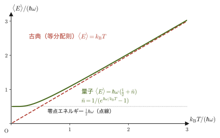
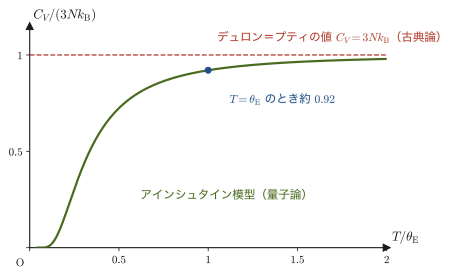
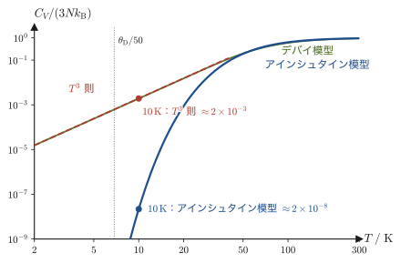
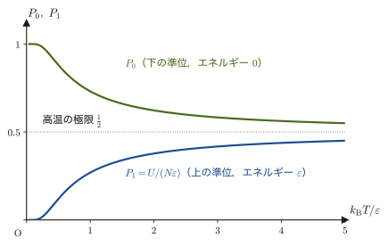
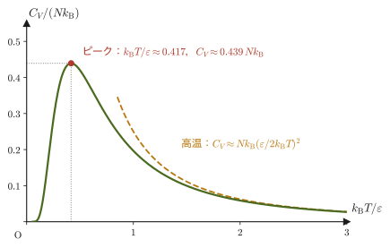
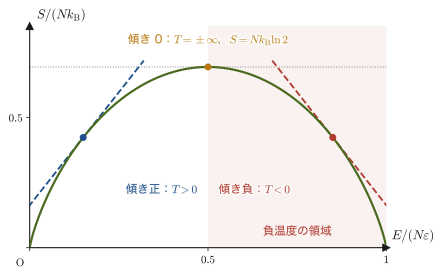
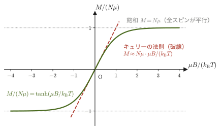
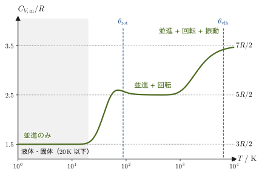

第51章カノニカル分布の応用 — 理想気体・固体の比熱・常磁性
高校物理では，理想気体の状態方程式 $pV=nRT$ や，単原子分子気体の内部エネルギー $U=\tfrac32nRT$ を「公式」として学んだ．一方，固体の比熱については，多くの金属でモル比熱がほぼ $25\ \mathrm{J/(mol\,K)}$ という共通の値になる（デュロン＝プティの法則）ことを知っている人もいるだろう．けれども，「ではなぜ，ダイヤモンドの室温の比熱は $6\ \mathrm{J/(mol\,K)}$ しかないのか」「なぜ固体の比熱は，温度を下げるとゼロに向かって落ちていくのか」と問われると，第IV部の熱力学だけでは答えられない．これらの問いに答えるには，原子や分子のエネルギーが，とびとびの値しかとれないこと（量子化）を考えに入れる必要がある．
前章では，温度 $T$ の熱浴と接した系がエネルギー $E_j$ の状態にある確率が，ボルツマン因子 $e^{-\beta E_j}$（$\beta\equiv1/(k_{\mathrm B}T)$）に比例するというカノニカル分布を導き，分配関数 $Z=\sum_jg_je^{-\beta E_j}$ を1つ計算すれば，内部エネルギー・自由エネルギー・エントロピー・圧力のすべてが微分だけで取り出せることを学んだ．この章の目的は，その処方箋を，具体的な物理系に次々と当てはめてみることである．「$Z$ を作って，対数をとって，微分する」という同じ手順だけで，理想気体の状態方程式，固体の比熱とその低温での振る舞い，2準位系に特有の山形の比熱，磁性体の磁化とキュリーの法則，2原子分子気体の比熱の階段状の変化，といった多様な現象が，1つの統一した見方で理解できる．
調和振動子・2準位系・磁場中のスピンのエネルギー準位は，量子力学が与える結果として，証明なしに借りて使う（量子力学そのものは本書では扱わない）．「エネルギー準位とボルツマン因子」だけで，これほどのことが言えるのがこの章の見どころである．
記号について．$\hbar$（エイチバー）は，プランク定数 $h$ を $2\pi$ で割ったもの（$\hbar=h/2\pi$）である．この章には電気素量は現れないので，指数関数は $e^{x}$ と書く（$e$ はネイピア数）．また，微視的状態の数は，第49章にならって $W$ と書く（統計力学の教科書では $\Omega$ と書くことも多い）．
- 単原子分子理想気体の分配関数を，位相空間の体積要素 $h^3$ と同種粒子の重複を除く $N!$ を使って計算し，状態方程式 $pV=Nk_{\mathrm B}T$，内部エネルギー $U=\tfrac32Nk_{\mathrm B}T$，エントロピー（ザックール＝テトローデの式）を再導出する
- 古典調和振動子（等分配則）と，量子力学が与えるエネルギー準位 $E_n=\hbar\omega(n+\tfrac12)$ をもつ量子調和振動子の分配関数を比較し，固体を $3N$ 個の独立な振動子とみなすアインシュタイン模型で比熱 $C_V(T)$ を計算する
- 高温でのデュロン＝プティの法則 $C_V\to3Nk_{\mathrm B}$ と，低温でのその破綻（量子効果の直接の現れ）を理解し，デバイ模型（第53章）への橋を架ける
- 2準位系の分配関数からショットキー比熱（低温・高温で $0$ に近づき，中間の温度でピークをもつ曲線）を導き，エネルギーに上限がある系で現れる負温度を理解する
- スピン $1/2$ の常磁性体の磁化 $M=N\mu\tanh(\mu B/k_{\mathrm B}T)$ を導き，高温極限としてのキュリーの法則 $M\propto B/T$ と，断熱消磁による冷却の原理を理解する
- 2原子分子気体の比熱への並進・回転・振動の寄与を，量子化されたエネルギー準位の「凍結」（freeze-out．熱エネルギー $k_{\mathrm B}T$ が準位の間隔より小さいために励起が起こらず，その自由度が比熱に寄与しなくなること）という観点から，定性的に理解する
もとにしたノート：本章はノートにない内容を補った章である．関連するノート：望月泰英『物理学ノート 統計力学』p. 9（カノニカル・アンサンブルの確率分布と分配関数の定義）．
51.1 単原子分子理想気体の分配関数
最初の応用として，体積 $V$ の容器に閉じ込められた，質量 $m$ の単原子分子（ヘリウム・ネオン・アルゴンなどの希ガスの原子）$N$ 個からなる理想気体を考える．分子どうしは衝突以外では力を及ぼし合わない（ポテンシャルエネルギーは $0$）ので，$1$ 個の分子のエネルギー（第45章のハミルトニアン）は運動エネルギーだけであり，運動量 $\bm p=(p_x,p_y,p_z)$ を使って
$$ \varepsilon(\bm p)=\frac{p^2}{2m}=\frac{p_x^2+p_y^2+p_z^2}{2m} $$と書ける．気体の分子は，箱の中を自由に飛び回っていて，エネルギーは連続的な値をとるように見える．そこで，第48章 48.2節で学んだ数え方を使う．すなわち，古典力学の位相空間 $(\bm x,\bm p)$ の中で微視的状態を数えるとき，$1$ 個の分子（位置3成分・運動量3成分の6次元の位相空間）については体積 $h^3$（$h$ はプランク定数）を「1つの状態」に対応させる．不確定性原理により，位置と運動量を $h$ より細かい精度では同時に決められないので，この $h^3$ が状態を区別する最小の単位になる，と考えるのである．すると，分配関数 $Z=\sum_jg_je^{-\beta E_j}$ の「状態についての和」は，位相空間についての積分を $h^3$ で割ったものに置き換わる．分子 $1$ 個の分配関数（1粒子分配関数と呼び，$Z_1$ と書く）は，
\begin{equation} Z_1=\frac{1}{h^3}\int_V\dd^3x\int_{-\infty}^{\infty}\dd^3p\ e^{-\beta\varepsilon(\bm p)} \label{eq:51-Z1-def} \end{equation}である．位置 $\bm x$ は容器の中（体積 $V$ の領域）を動き回れ，運動量 $\bm p$ はどんな値でもとれる．被積分関数が位置 $\bm x$ によらない（ポテンシャルが $0$ である）ので，位置についての積分は単に体積 $V$ を与える．運動量についての積分は，$p_x,p_y,p_z$ それぞれについての独立な1次元ガウス積分の積になる．
なぜ $h^3$ ちょうどで割るのか：箱の中の定在波を数える
不確定性原理による説明は「$h$ 程度」という見当を与えるだけである．$h$ ちょうどになる理由を，長さ $L$ の1次元の箱に閉じ込められた粒子で確かめよう．両端を固定した弦には，波長が $\lambda=2L/n$（$n=1,2,3,\ldots$）の定在波だけが立つ（第11章 11.7節）．物質波でも，箱に閉じ込められた粒子には同じ形の定在波だけが許される（導出は大学数学 第45章 45.3節）．ド・ブロイの関係 $p=h/\lambda$ より，許される運動量の大きさは
$$ p_n=\frac{h}{\lambda}=\frac{nh}{2L},\qquad n=1,2,3,\ldots $$で，隣り合う値の間隔は $h/(2L)$ である．運動量の大きさが $P$ 以下の状態は，$n\le2LP/h$ より $2LP/h$ 個ある．一方，位置と運動量の2次元の位相空間 $(x,p)$ で，$0\le x\le L$，$-P\le p\le P$ の長方形の面積は $L\times2P=2LP$ である（定在波は $+p$ と $-p$ の2つの進行波の重ね合わせなので，$p$ の正負の両方を数える）．したがって
$$ \text{状態の数}=\frac{2LP}{h}=\frac{\text{位相空間の面積}}{h} $$となり，位相空間の面積 $h$ あたりちょうど $1$ つの状態が対応する．$x,y,z$ の3方向で同じことをくり返すと，6次元の位相空間では体積 $h^3$ あたり $1$ つの状態になる．3次元の箱の定在波を波数空間で数える見方は，第52章 52.8節でもう一度使う．
導出：1粒子分配関数 $Z_1$
ガウス積分の公式 $\int_{-\infty}^{\infty}e^{-ax^2}\dd x=\sqrt{\pi/a}$（大学数学 第32章 32.1節．$a\gt0$）を，$a=\beta/(2m)$ として使うと，$p_x$ についての積分は
$$ \int_{-\infty}^{\infty}e^{-\beta p_x^2/(2m)}\dd p_x=\sqrt{\frac{\pi}{\beta/(2m)}}=\sqrt{\frac{2\pi m}{\beta}}=\sqrt{2\pi mk_{\mathrm B}T} $$である（$\beta=1/(k_{\mathrm B}T)$ を代入した）．$p_y,p_z$ についても同じ値なので，3方向をかけ合わせて
$$ \int_{-\infty}^{\infty}\dd^3p\ e^{-\beta p^2/(2m)}=\left(\sqrt{2\pi mk_{\mathrm B}T}\right)^3=\left(2\pi mk_{\mathrm B}T\right)^{3/2} $$となる．位置についての積分 $\int_V\dd^3x=V$ とあわせて，式 \eqref{eq:51-Z1-def} は
\begin{equation} Z_1=\frac{V}{h^3}\left(2\pi mk_{\mathrm B}T\right)^{3/2}=V\left(\frac{2\pi mk_{\mathrm B}T}{h^2}\right)^{3/2} \label{eq:51-Z1} \end{equation}次元を確かめよう．$[mk_{\mathrm B}T]=\mathrm{kg\cdot J}=\mathrm{kg^2\,m^2/s^2}$，$[h^2]=\mathrm{(J\,s)^2}=\mathrm{kg^2\,m^4/s^2}$ なので $[mk_{\mathrm B}T/h^2]=\mathrm{m^{-2}}$ であり，その $3/2$ 乗は $\mathrm{m^{-3}}$，これに $[V]=\mathrm{m^3}$ をかけると無次元になる．$Z_1$ は状態の数を数えた量なので，無次元でなければならず，確かにそうなっている．
（導出終わり）
定義51.1 熱的ド・ブロイ波長
式 \eqref{eq:51-Z1} の括弧の中身の平方根の逆数（第49章 49.6.1項で導入した長さと同じもの）
\begin{equation} \lambda_{\mathrm T}\equiv\frac{h}{\sqrt{2\pi mk_{\mathrm B}T}}\quad[\mathrm m] \label{eq:51-lambdaT} \end{equation}を熱的ド・ブロイ波長（thermal de Broglie wavelength）という．これを使うと $Z_1=V/\lambda_{\mathrm T}^3$ と書ける．
$\lambda_{\mathrm T}$ は，第49章 49.6節でザックール＝テトローデの式の対数の中身を無次元にする量としてすでに登場している（定義式も同じ）．ここでは，導出をくり返さず，それが分配関数 $Z_1=V/\lambda_{\mathrm T}^3$ という形で現れることだけに注目する．名前の由来の復習をしておこう．物質波の波長（ド・ブロイ波長）は運動量 $p$ を使って $\lambda=h/p$ と書かれる．温度 $T$ の気体の分子の運動量の大きさの典型的な値は $p\sim\sqrt{mk_{\mathrm B}T}$（$\tfrac{p^2}{2m}\sim k_{\mathrm B}T$ より）なので，$\lambda\sim h/\sqrt{mk_{\mathrm B}T}$ となり，これが $\lambda_{\mathrm T}$（$\sqrt{2\pi}$ の因子を除いて）に一致する．$\lambda_{\mathrm T}$ は $T$ が高いほど（また $m$ が大きいほど）短く，$T^{-1/2}$ に比例する．$Z_1=V/\lambda_{\mathrm T}^3$ は「容器の中に，1辺 $\lambda_{\mathrm T}$ の小さな立方体が何個入るか」，つまり分子1個が熱的にアクセスできる状態の数の目安を表している．$\lambda_{\mathrm T}$ が分子どうしの平均の間隔 $d=(V/N)^{1/3}$ に比べて十分短ければ，分子の波としての広がりどうしは重ならず，分子を「点」とみなす古典的な扱いが正当化される（図51.1，例題51.1）．
次に $N$ 個の分子の分配関数を考える．分子どうしは互いに独立（相互作用なし）なので，全体のエネルギーは各分子のエネルギーの和であり，ボルツマン因子は各分子のボルツマン因子の積になる．もし分子が1つ1つ区別できるならば，全体の分配関数は $Z_1$ を $N$ 回かけた $Z_1^N$ になる（独立な系の分配関数は積になる．第50章 定理50.2）．しかし，気体の分子は互いに区別できない同種粒子であり，第48章 48.2節で確認したとおり，粒子の入れ替えで移り合う状態は同じ状態として1回しか数えてはいけない．$N$ 個の粒子の並べ方は $N!$ 通りあるので，$Z_1^N$ を $N!$ で割る：
定理51.1 単原子分子理想気体の分配関数
体積 $V$ の中の，相互作用のない単原子分子 $N$ 個からなる理想気体の分配関数は，
\begin{equation} Z=\frac{Z_1^N}{N!}=\frac{1}{N!}\left[V\left(\frac{2\pi mk_{\mathrm B}T}{h^2}\right)^{3/2}\right]^N=\frac{1}{N!}\left(\frac{V}{\lambda_{\mathrm T}^3}\right)^N \label{eq:51-ZN} \end{equation}である．
なぜ $N!$ で割るのか
$N$ 個の分子に $1,2,\ldots,N$ という名札をつけて，「名札 $1$ の分子が状態 $a$，名札 $2$ の分子が状態 $b$，…」のように数えると，$Z_1^N$ ができる．ところが，分子は名札をつけられない．「$a$ にいる分子と $b$ にいる分子を取り替えても，物理的には同じ状態」である．たとえば全部の分子が別々の状態にあるとき，名札のつけ方の $N!$ 通りは，すべて同一の1つの状態を表している．だから，$Z_1^N$ は同じ状態を $N!$ 回ずつ余計に数えており，$N!$ で割らなければならない（分子がたまたま同じ状態に入っている場合には少しずれるが，気体が希薄で $\lambda_{\mathrm T}\ll d$ ならばそのような場合は無視できる）．（同じ約束は第48章 48.2節で位相空間の数え方として導入した．ここでは分配関数の形 $Z=Z_1^N/N!$ に写しただけである．）この $N!$ は，見かけは小さな補正にみえるが，エントロピーが示量的（$N$ に比例する量）になるために欠かせない（第49章 49.7節のギブスのパラドックス）．
分配関数が求まれば，前章の処方箋（定理50.1）で，圧力・内部エネルギー・エントロピーなどのマクロな量がすべて取り出せる．$N$ が非常に大きいので，$\ln N!$ にはスターリングの公式 $\ln N!\approx N\ln N-N$（第47章 47.3節）を使う．
導出：$A,\ p,\ U,\ S,\ \mu$ を分配関数から求める
式 \eqref{eq:51-ZN} の対数をとり，スターリングの公式を使うと，
$$ \ln Z=N\ln Z_1-\ln N!\approx N\ln Z_1-N\ln N+N=N\left[\ln\frac{Z_1}{N}+1\right]=N\left[\ln\frac{V}{N\lambda_{\mathrm T}^3}+1\right] $$ヘルムホルツ自由エネルギーは $A=-k_{\mathrm B}T\ln Z$ なので，
\begin{equation} A=-Nk_{\mathrm B}T\left[\ln\frac{V}{N\lambda_{\mathrm T}^3}+1\right] \label{eq:51-A-ideal} \end{equation}圧力 $A$ で $V$ を含むのは $\ln V$ の項だけなので，$p=-(\partial A/\partial V)_T$ は
$$ p=-\pdiff{A}{V}=Nk_{\mathrm B}T\cdot\frac1V\qquad\therefore\quad pV=Nk_{\mathrm B}T $$となり，理想気体の状態方程式が得られる．$N=nN_{\mathrm A}$，$R=N_{\mathrm A}k_{\mathrm B}$ とおけば，高校で学んだ $pV=nRT$ そのものである．
内部エネルギー $U=-\partial\ln Z/\partial\beta$ を使う．式 \eqref{eq:51-Z1} を $\beta$ で書くと $Z_1=V(2\pi m/h^2)^{3/2}\beta^{-3/2}$ なので，$\ln Z_1=-\tfrac32\ln\beta+(\beta\text{ によらない量})$ であり，$\ln N!$ は $\beta$ によらないから，
$$ U=-\pdiff{\ln Z}{\beta}=-N\pdiff{\ln Z_1}{\beta}=-N\cdot\left(-\frac{3}{2\beta}\right)=\frac32Nk_{\mathrm B}T $$エントロピー $S=-(\partial A/\partial T)_V$ を計算する．$\lambda_{\mathrm T}\propto T^{-1/2}$ なので $\ln(1/\lambda_{\mathrm T}^3)=\tfrac32\ln T+(T\text{ によらない量})$ であり，式 \eqref{eq:51-A-ideal} を積の微分公式で $T$ について微分すると，
$$ \pdiff{A}{T}=-Nk_{\mathrm B}\left[\ln\frac{V}{N\lambda_{\mathrm T}^3}+1\right]-Nk_{\mathrm B}T\cdot\frac{3}{2T}=-Nk_{\mathrm B}\left[\ln\frac{V}{N\lambda_{\mathrm T}^3}+\frac52\right] $$よって $S=-\partial A/\partial T$ は次の式になる（右辺は，微分の符号を反転したもの）．
\begin{equation} S=Nk_{\mathrm B}\left[\ln\frac{V}{N\lambda_{\mathrm T}^3}+\frac52\right]=Nk_{\mathrm B}\left[\ln\left\{\frac VN\left(\frac{2\pi mk_{\mathrm B}T}{h^2}\right)^{3/2}\right\}+\frac52\right] \label{eq:51-S-ideal} \end{equation}これは，第49章 49.6節でミクロカノニカル分布（位相空間の体積）から導いたザックール＝テトローデの式（公式49.2の，温度 $T$ で表した形）とまったく同じである．同じ結果に，等重率の原理からも，カノニカル分布からも到達できる——2つのアンサンブルが等価であることの1つの実例である．
化学ポテンシャル $\mu=(\partial A/\partial N)_{T,V}$ を計算する．式 \eqref{eq:51-A-ideal} の $N$ は，係数の $N$ と対数の中の $N$ の2か所にあるので，積の微分公式より
$$ \mu=\pdiff{A}{N}=-k_{\mathrm B}T\left[\ln\frac{V}{N\lambda_{\mathrm T}^3}+1\right]-Nk_{\mathrm B}T\cdot\pdiff{}{N}\ln\frac{V}{N\lambda_{\mathrm T}^3} $$第2項の微分は，$\ln\dfrac{V}{N\lambda_{\mathrm T}^3}=\ln\dfrac{V}{\lambda_{\mathrm T}^3}-\ln N$ より $\pdiff{}{N}\ln\dfrac{V}{N\lambda_{\mathrm T}^3}=-\dfrac1N$ である．したがって第2項は $-Nk_{\mathrm B}T\cdot\left(-\dfrac1N\right)=+k_{\mathrm B}T$ となり，第1項の括弧の中の $+1$ が作る $-k_{\mathrm B}T$ と打ち消し合って，
$$ \mu=-k_{\mathrm B}T\ln\frac{V}{N\lambda_{\mathrm T}^3} $$を得る．これは第49章 49.6節でエントロピーの偏微分から求めた化学ポテンシャルと同じ式で，次章（第52章）で使う．
一貫性の確認 $A=U-TS$ が成り立つかを確かめる．$U-TS=\tfrac32Nk_{\mathrm B}T-Nk_{\mathrm B}T\left[\ln\dfrac{V}{N\lambda_{\mathrm T}^3}+\tfrac52\right]=-Nk_{\mathrm B}T\left[\ln\dfrac{V}{N\lambda_{\mathrm T}^3}+1\right]$ となり，式 \eqref{eq:51-A-ideal} の $A$ と一致する．
（導出終わり）
定理51.2 単原子分子理想気体の熱力学量
体積 $V$，温度 $T$ の単原子分子理想気体（$N$ 個）について，
$$ pV=Nk_{\mathrm B}T,\qquad U=\frac32Nk_{\mathrm B}T,\qquad S=Nk_{\mathrm B}\left[\ln\frac{V}{N\lambda_{\mathrm T}^3}+\frac52\right],\qquad \mu=-k_{\mathrm B}T\ln\frac{V}{N\lambda_{\mathrm T}^3} $$である．定積熱容量は $C_V=\partial U/\partial T=\tfrac32Nk_{\mathrm B}$（モル熱容量は $\tfrac32R$）．
内部エネルギーの結果は，第24章 24.3節で気体分子運動論から，また等分配則（第50章 50.7節：運動エネルギーの2次の項1つにつき $\tfrac12k_{\mathrm B}T$，分子1個の並進の自由度は3つ）から得た結果と一致している．カノニカル分布という一般的な枠組みから出発しても，理想気体についてはこれまでに学んだ結果を再現するだけで，何の矛盾も生じない．新しく得られたのは，$h$ を含んだエントロピーの絶対値の式（式 \eqref{eq:51-S-ideal}）であり，これは熱力学（第29章 29.2節）では積分定数として決められなかった量である．
例題51.1 熱的ド・ブロイ波長 — 古典統計力学が使える条件
酸素分子 $\mathrm O_2$（質量 $m=5.3\times10^{-26}\ \mathrm{kg}$）の気体が，圧力 $p=1.013\times10^5\ \mathrm{Pa}$（$1\ \mathrm{atm}$），温度 $T=300\ \mathrm K$ にあるとする．(1) 熱的ド・ブロイ波長 $\lambda_{\mathrm T}$ を求めよ．(2) 分子間の平均距離 $d=(V/N)^{1/3}$ を求めて $\lambda_{\mathrm T}$ と比較し，分子1個あたりの状態数 $Z_1/N=(V/N)/\lambda_{\mathrm T}^3=(d/\lambda_{\mathrm T})^3$ を求めよ．
解答 (1) 式 \eqref{eq:51-lambdaT} に $h=6.626\times10^{-34}\ \mathrm{J\,s}$，$k_{\mathrm B}=1.381\times10^{-23}\ \mathrm{J/K}$ を代入する．
平方根の中身は
$$ 2\pi\times5.3\times10^{-26}\ \mathrm{kg}\times1.381\times10^{-23}\ \mathrm{J/K}\times300\ \mathrm K=1.38\times10^{-45}\ \mathrm{kg\,J}=1.38\times10^{-45}\ \mathrm{kg^2\,m^2/s^2} $$で，その平方根は $3.71\times10^{-23}\ \mathrm{kg\,m/s}$（運動量の単位）である．したがって
$$ \lambda_{\mathrm T}=\frac{6.626\times10^{-34}\ \mathrm{J\,s}}{3.71\times10^{-23}\ \mathrm{kg\,m/s}}\approx1.78\times10^{-11}\ \mathrm m=17.8\ \mathrm{pm} $$(2) 状態方程式 $pV=Nk_{\mathrm B}T$ より $V/N=k_{\mathrm B}T/p$ なので，
$$ d=\left(\frac{k_{\mathrm B}T}{p}\right)^{1/3}=\left(\frac{1.381\times10^{-23}\times300}{1.013\times10^5}\right)^{1/3}\ \mathrm m=\left(4.09\times10^{-26}\ \mathrm{m^3}\right)^{1/3}\approx3.4\times10^{-9}\ \mathrm m=3.4\ \mathrm{nm} $$（括弧の中の $4.09\times10^{-26}\ \mathrm{m^3}$ は，分子1個あたりの体積 $V/N$ である．）
よって $\lambda_{\mathrm T}/d\approx5.2\times10^{-3}$，すなわち分子間の距離は $\lambda_{\mathrm T}$ の約190倍であり，$(d/\lambda_{\mathrm T})^3\approx7\times10^{6}$．分子1個あたりの利用可能な状態が $10^7$ 個ほどもあり，そのうち実際に占められるのはごくわずか（ほとんどの状態が空）なので，分子どうしの波が重なることはなく，同種粒子の量子力学的な違い（第52章）は効かない．これが，室温・大気圧の気体を古典統計力学として扱ってよい理由である．
例題51.2 ヘリウムの標準モルエントロピー
式 \eqref{eq:51-S-ideal} を使って，ヘリウム（$m=4.0026\ \mathrm u=6.646\times10^{-27}\ \mathrm{kg}$．$1\ \mathrm u=1.6605\times10^{-27}\ \mathrm{kg}$）が $T=298.15\ \mathrm K$，$p=1\times10^5\ \mathrm{Pa}$（$1\ \mathrm{bar}$）にあるときの $1\ \mathrm{mol}$ あたりのエントロピー $S_{\mathrm m}$ を求めよ．
解答 $N=N_{\mathrm A}$ とし，$V/N=k_{\mathrm B}T/p$ を使うと，$S_{\mathrm m}=R\left[\ln\dfrac{k_{\mathrm B}T}{p\,\lambda_{\mathrm T}^3}+\dfrac52\right]$．まず $\lambda_{\mathrm T}=h/\sqrt{2\pi mk_{\mathrm B}T}=5.054\times10^{-11}\ \mathrm m$ と，$k_{\mathrm B}T/p=1.380649\times10^{-23}\times298.15/(1\times10^5)=4.116\times10^{-26}\ \mathrm{m^3}$ を求める．
$$ \frac{k_{\mathrm B}T}{p\,\lambda_{\mathrm T}^3}=\frac{4.116\times10^{-26}}{(5.054\times10^{-11})^3}=\frac{4.116\times10^{-26}}{1.291\times10^{-31}}\approx3.189\times10^{5} $$$\ln(3.189\times10^5)\approx12.673$ なので，
$$ S_{\mathrm m}=8.3145\ \mathrm{J/(mol\,K)}\times(12.673+2.5)\approx126.15\ \mathrm{J/(mol\,K)} $$である．これは，標準熱力学表にある値 $126.15\ \mathrm{J/(mol\,K)}$ とよく一致する．同じ式で，ネオン（$m=20.180\ \mathrm u$）は $146.33\ \mathrm{J/(mol\,K)}$，アルゴン（$m=39.948\ \mathrm u$，例題49.8）は $154.85\ \mathrm{J/(mol\,K)}$ となり，表の値（$146.33$，$154.84\ \mathrm{J/(mol\,K)}$）と一致する．アルゴンについては，極低温からの熱容量の測定を積分して決めたエントロピー（第32章の第3法則，32.2節）とも，実験の誤差の範囲でよく合うことが知られている．プランク定数 $h$ を含む理論式が，カロリメーターで測ったエントロピーまで予言している．
例題51.3 $Z_1$ の被積分関数の意味 — 運動量のばらつきと熱的ド・ブロイ波長
式 \eqref{eq:51-Z1-def} の被積分関数を規格化すると，分子1個の運動量の確率密度が得られる．(1) その形を求め，運動量の1成分 $p_x$ の標準偏差 $\sigma_p=\sqrt{\langle p_x^2\rangle}$ を求めよ．(2) 酸素分子（$m=5.3\times10^{-26}\ \mathrm{kg}$）の $T=300\ \mathrm K$ での $\sigma_p$ を数値で求め，$h/\sigma_p$ と $\lambda_{\mathrm T}$ の比が $\sqrt{2\pi}$ であることを確かめよ．
解答 (1) 分子1個が運動量 $\bm p$ の付近の $\dd^3p$ の中にある確率は，ボルツマン因子を $Z_1$ の運動量部分（運動量積分の値そのもの）で割った
$$ P(\bm p)\dd^3p=\frac{e^{-p^2/(2mk_{\mathrm B}T)}}{(2\pi mk_{\mathrm B}T)^{3/2}}\dd^3p $$である．$\bm p=m\bm v$ で速度に直せばマクスウェルの速度分布になり，これは第50章 50.4節で導いた式，平均の速さなどの計算は例題50.10と同じなので，ここではくり返さない．$P(\bm p)$ は $p_x,p_y,p_z$ について同じ形のガウス分布の積なので，$p_x$ だけの分布は $e^{-p_x^2/(2mk_{\mathrm B}T)}/\sqrt{2\pi mk_{\mathrm B}T}$ である．これは，ガウス分布 $e^{-p_x^2/(2\sigma_p^2)}/\sqrt{2\pi\sigma_p^2}$ と見比べて，
$$ \sigma_p^2=\langle p_x^2\rangle=mk_{\mathrm B}T\qquad\therefore\ \sigma_p=\sqrt{mk_{\mathrm B}T} $$である（$\langle p_x^2/2m\rangle=\tfrac12k_{\mathrm B}T$，つまり運動エネルギーの1成分あたり $\tfrac12k_{\mathrm B}T$ というエネルギー等分配の法則と同じ内容である）．
(2) $\sigma_p=\sqrt{5.3\times10^{-26}\ \mathrm{kg}\times1.381\times10^{-23}\ \mathrm{J/K}\times300\ \mathrm K}=\sqrt{2.196\times10^{-46}}\ \mathrm{kg\,m/s}\approx1.48\times10^{-23}\ \mathrm{kg\,m/s}$ である．$h/\sigma_p=6.626\times10^{-34}/1.48\times10^{-23}\ \mathrm m\approx4.47\times10^{-11}\ \mathrm m=44.7\ \mathrm{pm}$．一方，例題51.1で求めた $\lambda_{\mathrm T}=17.8\ \mathrm{pm}$ なので，比は $(h/\sigma_p)/\lambda_{\mathrm T}=44.7/17.8=2.51\approx\sqrt{2\pi}=2.507$ である．実際，$\lambda_{\mathrm T}=h/\sqrt{2\pi mk_{\mathrm B}T}=h/(\sqrt{2\pi}\,\sigma_p)$ であり，熱的ド・ブロイ波長は，運動量のばらつき $\sigma_p$ から決まる波の長さ $h/\sigma_p$ を $\sqrt{2\pi}$ で割ったものにほかならない．
応用：$\lambda_{\mathrm T}$ が分子間距離に近づくとき — 量子縮退
$\lambda_{\mathrm T}\propto T^{-1/2}$ なので，気体を冷やしていくと $\lambda_{\mathrm T}$ は長くなり，密度が高ければ $\lambda_{\mathrm T}\gtrsim d$ に達する．すると古典的な取り扱い（$Z=Z_1^N/N!$）は破綻して，同種粒子がフェルミ粒子かボース粒子かによって振る舞いが大きく変わる（第52章）．液体ヘリウム4が約 $2.17\ \mathrm K$ 以下で超流動になること，金属中の電子（質量が小さく密度が高いので，室温でも $\lambda_{\mathrm T}\gtrsim d$）が古典的な気体のようには振る舞わないこと，そして1995年に希薄なルビジウム原子の気体を約 $170\ \mathrm{nK}$ まで冷やして実現されたボース＝アインシュタイン凝縮は，すべてこの量子縮退の現れである．
51.2 調和振動子とアインシュタイン模型の比熱
固体の中の原子は，結晶格子の格子点のまわりで，ばねにつながれたおもりのように振動している．固体の比熱は，この原子の振動がどれだけエネルギーを蓄えられるかで決まる．そこでまず，最も基本的な振動の模型である1次元の調和振動子（ばね振り子，第7章）を，古典力学で扱う場合と量子力学で扱う場合とで比較しよう．質量 $m$，角振動数 $\omega$ の1次元調和振動子のエネルギーは，位置 $x$ と運動量 $p$ の関数として
$$ \varepsilon(x,p)=\frac{p^2}{2m}+\frac12m\omega^2x^2 $$と書ける（運動エネルギーと，ばねの弾性エネルギー）．
51.2.1 古典調和振動子と等分配則
古典力学では，振動子のエネルギーは連続的な値をとれる．位相空間 $(x,p)$ は2次元（自由度1）なので，状態を数える単位は $h^1=h$ である．分配関数は，理想気体のときと同じ手順（位相空間の積分をガウス積分で実行する）で求まる．
導出：古典調和振動子の分配関数
$$ Z_{\mathrm{cl}}=\frac1h\int_{-\infty}^{\infty}\dd x\int_{-\infty}^{\infty}\dd p\ e^{-\beta\left[\frac{p^2}{2m}+\frac12m\omega^2x^2\right]} =\frac1h\left(\int_{-\infty}^{\infty}e^{-\beta p^2/(2m)}\dd p\right)\left(\int_{-\infty}^{\infty}e^{-\beta m\omega^2x^2/2}\dd x\right) $$ボルツマン因子は $p$ だけの関数と $x$ だけの関数の積に分かれるので，積分も積に分かれる．公式 $\int e^{-ax^2}\dd x=\sqrt{\pi/a}$ を，前者は $a=\beta/(2m)$，後者は $a=\beta m\omega^2/2$ として使うと，2つの積分はそれぞれ $\sqrt{2\pi m/\beta}$，$\sqrt{2\pi/(\beta m\omega^2)}$ である．積をとると $m$ が消えて，
$$ Z_{\mathrm{cl}}=\frac1h\sqrt{\frac{2\pi m}{\beta}}\sqrt{\frac{2\pi}{\beta m\omega^2}}=\frac1h\cdot\frac{2\pi}{\beta\omega} $$$h=2\pi\hbar$（$\hbar$ は「エイチバー」と読み，プランク定数 $h$ を $2\pi$ で割ったもの．$\hbar\approx1.055\times10^{-34}\ \mathrm{J\,s}$）を使うと $2\pi/h=1/\hbar$ なので，
\begin{equation} Z_{\mathrm{cl}}=\frac{1}{\beta\hbar\omega}=\frac{k_{\mathrm B}T}{\hbar\omega} \label{eq:51-Zcl} \end{equation}を得る．$k_{\mathrm B}T$ は熱エネルギー，$\hbar\omega$ は（あとで見るように）量子力学での振動子のエネルギーの単位なので，$Z_{\mathrm{cl}}$ は「熱エネルギーが，エネルギーの単位の何個ぶんか」を表す無次元の数である．
（導出終わり）
平均エネルギーは $U=-\partial\ln Z_{\mathrm{cl}}/\partial\beta$ から求まる．$\ln Z_{\mathrm{cl}}=-\ln\beta-\ln(\hbar\omega)$ なので $\partial\ln Z_{\mathrm{cl}}/\partial\beta=-1/\beta$，したがって
\begin{equation} U=\frac1\beta=k_{\mathrm B}T,\qquad C=\pdiff{U}{T}=k_{\mathrm B} \label{eq:51-U-cl-osc} \end{equation}である．これは等分配則（第50章 50.7節）が，エネルギーの2つの2次の項（運動エネルギー $p^2/(2m)$ と位置エネルギー $\tfrac12m\omega^2x^2$）にそれぞれ $\tfrac12k_{\mathrm B}T$ を与える結果 $U=\tfrac12k_{\mathrm B}T+\tfrac12k_{\mathrm B}T=k_{\mathrm B}T$ と一致する．重要なのは，$C=k_{\mathrm B}$ が振動数 $\omega$ にも温度にもよらない定数だということである．古典力学の範囲では，調和振動子は，どんなに温度が低くなっても，つねに $k_{\mathrm B}$ の熱容量をもつ．次項で見る量子調和振動子とのちがいが，この章の主題である．
例題51.4 古典調和振動子の熱容量
式 \eqref{eq:51-Zcl} を使って，質量 $m$，ばね定数 $k$ の $N$ 個の古典的な1次元調和振動子の内部エネルギーと熱容量を求めよ．$3N$ 個の振動子でできた固体（$N$ を $1\ \mathrm{mol}$，すなわち $N_{\mathrm A}$ とする）のモル比熱はいくらになるか．
解答 $N$ 個の振動子（互いに区別でき，独立）の分配関数は $Z_{\mathrm{cl}}^N$ なので，$U=-\partial\ln Z_{\mathrm{cl}}^N/\partial\beta=Nk_{\mathrm B}T$，$C=Nk_{\mathrm B}$ で，$\omega=\sqrt{k/m}$ によらない．固体は $1\ \mathrm{mol}$ の原子 $N_{\mathrm A}$ 個が3方向に振動するので，$3N_{\mathrm A}$ 個の振動子と見なせる．したがって
$$ C_{V,\mathrm m}=3N_{\mathrm A}k_{\mathrm B}=3R=3\times8.314\ \mathrm{J/(mol\,K)}\approx24.9\ \mathrm{J/(mol\,K)} $$となる．これは物質にも温度にもよらない値である．この「$3R$」が，次節で見るデュロン＝プティの法則である．
51.2.2 量子調和振動子とアインシュタイン模型
前項では，振動子を最後まで古典力学のままで扱った．けれども，実際の原子の振動は量子力学に従う．本書では量子力学そのものは扱わないが，シュレーディンガー方程式を調和ポテンシャル $\tfrac12m\omega^2x^2$ について解くと，エネルギーが連続な値をとれず，とびとびの値（エネルギー準位）だけが許されることがわかる．その結果を，量子力学が与える事実として借りて使う．
法則51.1 量子調和振動子のエネルギー準位（量子力学の結果）
角振動数 $\omega$ の1次元量子調和振動子がとりうるエネルギーは，量子力学によれば
\begin{equation} E_n=\hbar\omega\left(n+\frac12\right),\qquad n=0,1,2,3,\ldots \label{eq:51-En} \end{equation}に量子化されていることが知られている．隣り合う準位の間隔はすべて $\hbar\omega$ で等しい（図51.2）．最低のエネルギー（基底状態，$n=0$）でも $E_0=\tfrac12\hbar\omega\ne0$ で，これを零点エネルギー（zero-point energy）という．この事実の導出（シュレーディンガー方程式を解くこと）は，大学数学の第46章 46.2節にある．ここでは導出には立ち入らず，結果だけを使う．
イメージ：なぜ，閉じ込められた系のエネルギーはとびとびなのか
弦の両端を固定すると，弦に立つ定在波の波長は $2L/n$（$n=1,2,3,\ldots$）のとびとびの値に限られる（第11章 11.7節）．両端で振れが $0$ でなければならないという「境界条件」が，波長を限るのである．量子力学では，粒子も波（物質波）の性質をもち，$p=h/\lambda$ の関係で波長が運動量と結びつく．したがって，箱やばねのポテンシャルの中に閉じ込められた粒子の波も，境界や壁の条件によって波長が限られ，運動量とエネルギーがとびとびの値になる．調和振動子のエネルギー準位 $E_n$ は，その結果である．
式 \eqref{eq:51-En} を使うと，量子調和振動子の分配関数は無限級数になる．$x\equiv e^{-\beta\hbar\omega}$ とおくと，これは公比 $x$（$0\lt x\lt1$）の無限等比級数 $\sum_{n=0}^{\infty}x^n=1/(1-x)$（高校で学んだ無限等比級数の和の公式．大学数学 第49章 49.4節のプランクの振動子でも同じ級数を使った）そのものである．
導出：量子調和振動子の分配関数と平均エネルギー
各準位は縮退していない（$g_n=1$）ので，
$$ Z_{\mathrm{qm}}=\sum_{n=0}^{\infty}e^{-\beta\hbar\omega(n+\frac12)}=e^{-\beta\hbar\omega/2}\sum_{n=0}^{\infty}\left(e^{-\beta\hbar\omega}\right)^n=e^{-\beta\hbar\omega/2}\cdot\frac{1}{1-e^{-\beta\hbar\omega}} $$（$\beta,\hbar,\omega\gt0$ なので公比 $e^{-\beta\hbar\omega}$ は $0\lt\cdot\lt1$ をみたし，級数は収束する．また $e^{-\beta\hbar\omega(n+1/2)}=e^{-\beta\hbar\omega/2}(e^{-\beta\hbar\omega})^n$ と分けた）．
\begin{equation} Z_{\mathrm{qm}}=\frac{e^{-\beta\hbar\omega/2}}{1-e^{-\beta\hbar\omega}}=\frac{1}{2\sinh(\beta\hbar\omega/2)} \label{eq:51-Zqm} \end{equation}（最後の等号は，分子・分母に $e^{\beta\hbar\omega/2}$ をかけ，双曲線正弦 $\sinh y=(e^y-e^{-y})/2$（大学数学 第2章 2.5節）を使った）．平均エネルギー $\langle E\rangle=-\partial\ln Z_{\mathrm{qm}}/\partial\beta$ を計算する．$\ln Z_{\mathrm{qm}}=-\tfrac12\beta\hbar\omega-\ln(1-e^{-\beta\hbar\omega})$ を $\beta$ で微分すると，合成関数の微分より $\dd\left[-\ln(1-e^{-\beta\hbar\omega})\right]/\dd\beta=-\dfrac{\hbar\omega\,e^{-\beta\hbar\omega}}{1-e^{-\beta\hbar\omega}}$ なので，
$$ \pdiff{\ln Z_{\mathrm{qm}}}{\beta}=-\frac{\hbar\omega}{2}-\frac{\hbar\omega\,e^{-\beta\hbar\omega}}{1-e^{-\beta\hbar\omega}} $$符号を変え，第2項の分子・分母に $e^{\beta\hbar\omega}$ をかけて整理すると，
\begin{equation} \langle E\rangle=\frac12\hbar\omega+\frac{\hbar\omega}{e^{\beta\hbar\omega}-1} \label{eq:51-Eavg-ho} \end{equation}（導出終わり）
式 \eqref{eq:51-Eavg-ho} の第2項 $\hbar\omega/(e^{\beta\hbar\omega}-1)=\hbar\omega\langle n\rangle$ は，励起の量子数の平均値 $\langle n\rangle=1/(e^{\beta\hbar\omega}-1)$ に，エネルギーの単位 $\hbar\omega$ をかけたものである．この平均エネルギーの温度変化を，古典的な結果 $\langle E\rangle=k_{\mathrm B}T$ と比べたのが図51.3である．
なお，$\langle n\rangle=1/(e^{\beta\hbar\omega}-1)$ の形の因子はボース因子とよばれる．この $1/(e^{x}-1)$ は，第52章 52.6節で，化学ポテンシャルが $\mu=0$ のボース＝アインシュタイン分布として再び現れる．また，次項の熱容量に出てくる $x^2e^x/(e^x-1)^2$ は，第53章のデバイ模型で，第47章 47.5節のボース型積分の公式とあわせて $T^3$ 則を導くときに，もう一度現れる．

なぜこの式に見覚えがあるのか — プランクの振動子との対応
式 \eqref{eq:51-Eavg-ho} の第2項は，大学数学 第49章 49.4節「量子仮説による平均エネルギーの導出」で学んだ，プランクの振動子の平均エネルギー $h\nu/(e^{h\nu/k_{\mathrm B}T}-1)$ と，$\hbar\omega=h\nu$（$\omega=2\pi\nu$ による）の対応のもとで，数学的にまったく同じ形をしている．これは偶然ではない．プランクは1900年に，黒体放射のスペクトルを説明するために，空洞の壁の中の振動子（共鳴子）のエネルギーが $h\nu$ の整数倍の値しかとれないと仮定した．のちに，空洞の中の電磁波の1つ1つのモード（振動数 $\nu$）自体が調和振動子とみなせて，その量子（エネルギー $h\nu$ の粒）が光子であると理解されるようになった（光の粒子性は，1905年のアインシュタインの光量子仮説からはっきりしていった）．一方，結晶の格子振動の1つのモード（角振動数 $\omega$）も量子化された調和振動子で，その量子 $\hbar\omega$ をフォノン（格子振動の量子）という．同じ数式が，光の量子に使われれば黒体放射を，原子の振動に使われれば固体の比熱を説明する．この統一的な見方は，第53章で正式に展開する．なお，プランクの式に零点エネルギー $\tfrac12\hbar\omega$ がないのは，$\langle E\rangle$ のうち温度によって変わる部分だけを取り出しているからである（零点エネルギーは温度によらず，熱容量に寄与しない）．
例題51.5 量子調和振動子の平均エネルギーの高温極限
式 \eqref{eq:51-Eavg-ho} を，$X\equiv\beta\hbar\omega=\hbar\omega/(k_{\mathrm B}T)\ll1$（高温）で展開して，$\langle E\rangle\to k_{\mathrm B}T$（古典論の式 \eqref{eq:51-U-cl-osc}）となることを示し，最初の補正項を求めよ．また $X=1$ のとき，$\langle E\rangle$ は $k_{\mathrm B}T$ の何倍か．
解答 $X\ll1$ で $e^X=1+X+\tfrac12X^2+\tfrac16X^3+\cdots$（大学数学 第4章 4.2節のテイラー展開）と展開すると，$e^X-1=X\left(1+\tfrac12X+\tfrac16X^2+\cdots\right)$ なので，等比級数の展開 $1/(1+y)\approx1-y+y^2$ より
$$ \frac{1}{e^X-1}=\frac1X\left(1-\frac X2-\frac{X^2}{6}+\frac{X^2}{4}+\cdots\right)=\frac1X-\frac12+\frac{X}{12}+\cdots $$となる．したがって $\langle E\rangle/(\hbar\omega)=\tfrac12+\dfrac1{e^X-1}=\dfrac1X+\dfrac X{12}+\cdots$．零点エネルギーの $\tfrac12$ と展開の $-\tfrac12$ がちょうど打ち消し合うことに注意する．$\hbar\omega/X=k_{\mathrm B}T$ を使って戻すと，
$$ \langle E\rangle=k_{\mathrm B}T\left[1+\frac{1}{12}\left(\frac{\hbar\omega}{k_{\mathrm B}T}\right)^2+\cdots\right] $$で，$k_{\mathrm B}T\gg\hbar\omega$ では第2項は $1$ に比べて無視できて $\langle E\rangle\to k_{\mathrm B}T$，古典論の結果に一致する．準位の間隔 $\hbar\omega$ が熱エネルギー $k_{\mathrm B}T$ に比べて細かければ，エネルギーが連続的に見えて，古典論と量子論の区別がつかなくなるからである．$X=1$ のときは正確な式で $\langle E\rangle/(k_{\mathrm B}T)=\tfrac12+\dfrac1{e-1}=1.082$，つまり $8\%$ だけ古典値より大きい（展開の第2項は $1/12\approx0.083$ で，ほぼこの差を与える）．
固体は，$N$ 個の原子が結晶格子の中で互いに束縛し合いながら振動している系である．最も単純な模型として，1907年にアインシュタイン（Einstein）は，$N$ 個の原子がそれぞれ互いには相互作用せず，すべて同じ角振動数 $\omega$（したがって同じエネルギー準位間隔 $\hbar\omega$）の独立な量子調和振動子であると仮定した．これがアインシュタイン模型（Einstein model）である．各原子は3次元空間の中で $x,y,z$ の3方向に独立に振動できる（3つの自由度）ので，固体全体は $3N$ 個の独立な1次元量子調和振動子の集まりとみなせる．これらの振動子は，格子点の場所と振動の向きで1つ1つ区別できる（気体分子とちがって入れ替えがない）ので，$N!$ で割る必要はなく，独立な系の分配関数は積になる（第50章 定理50.2）．したがって，固体全体の分配関数は，式 \eqref{eq:51-Zqm} の $Z_{\mathrm{qm}}$ の $3N$ 乗 $Z_{\mathrm{qm}}^{3N}$ で，内部エネルギーは式 \eqref{eq:51-Eavg-ho} の $3N$ 倍になる．（この固体の微視的状態の数を数える問題は，第48章 48.5節でミクロカノニカル分布の立場から扱った．ここではカノニカル分布で，はるかに簡単に同じ物理を扱える．）
公式51.1 アインシュタイン模型の内部エネルギー
$3N$ 個の独立な量子調和振動子（角振動数 $\omega$）でできた固体の内部エネルギーは，
\begin{equation} U(T)=3N\langle E\rangle=\frac32N\hbar\omega+\frac{3N\hbar\omega}{e^{\hbar\omega/(k_{\mathrm B}T)}-1} \label{eq:51-U-einstein} \end{equation}である．第1項 $\tfrac32N\hbar\omega$ は温度によらない零点エネルギーの総和である．
定義51.2 アインシュタイン温度
角振動数 $\omega$ を温度の次元をもつ量で表した
$$ \theta_{\mathrm E}\equiv\frac{\hbar\omega}{k_{\mathrm B}}\quad[\mathrm K] $$をアインシュタイン温度（Einstein temperature）という．以下では $x\equiv\theta_{\mathrm E}/T=\hbar\omega/(k_{\mathrm B}T)$ を使う．
導出：アインシュタイン模型の熱容量 $C_V$
定積熱容量は，公式51.1（式 \eqref{eq:51-U-einstein}）の $U$ を使って $C_V=\partial U/\partial T$ である．零点エネルギーの項は $T$ によらないので，第2項だけを微分すればよい．$\hbar\omega=k_{\mathrm B}\theta_{\mathrm E}$ を使うと，第2項は $3Nk_{\mathrm B}\theta_{\mathrm E}/(e^{\theta_{\mathrm E}/T}-1)$ である．合成関数の微分 $\dd\left(e^{\theta_{\mathrm E}/T}\right)/\dd T=-\dfrac{\theta_{\mathrm E}}{T^2}e^{\theta_{\mathrm E}/T}$ を使うと，
$$ C_V=3Nk_{\mathrm B}\theta_{\mathrm E}\cdot\left(-\frac{1}{\left(e^{\theta_{\mathrm E}/T}-1\right)^2}\right)\cdot\left(-\frac{\theta_{\mathrm E}}{T^2}e^{\theta_{\mathrm E}/T}\right) $$となる．負号が2つ打ち消し合って，整理すると
\begin{equation} C_V=3Nk_{\mathrm B}\left(\frac{\theta_{\mathrm E}}{T}\right)^2\frac{e^{\theta_{\mathrm E}/T}}{\left(e^{\theta_{\mathrm E}/T}-1\right)^2}=3Nk_{\mathrm B}\,x^2\frac{e^x}{(e^x-1)^2} \label{eq:51-Cv-einstein} \end{equation}を得る（グラフは図51.4）．この式は，$x=\theta_{\mathrm E}/T$ だけの関数 $f_{\mathrm E}(x)\equiv x^2e^x/(e^x-1)^2$ に $3Nk_{\mathrm B}$ をかけた形をしていて，物質の違いは $\theta_{\mathrm E}$ だけに現れる（$T/\theta_{\mathrm E}$ で測った比熱の曲線は，どの物質でも同じ形になる）．
（導出終わり）
例題51.6 アインシュタイン温度に対応する振動数と，室温・低温での比熱
ある金属を，アインシュタイン温度 $\theta_{\mathrm E}=240\ \mathrm K$ のアインシュタイン固体とみなす（銅の格子比熱を近似的によく表す代表値で，デバイ温度 $\theta_{\mathrm D}=343\ \mathrm K$ の $0.7$ 倍程度．数値は説明のための値である）．(1) この $\theta_{\mathrm E}$ に対応する振動数 $\nu=\omega/(2\pi)$ とエネルギー $\hbar\omega$（$\mathrm{meV}$ 単位）を求めよ．(2) 式 \eqref{eq:51-Cv-einstein} により，室温 $T=300\ \mathrm K$ と $T=50\ \mathrm K$ での $C_V/(3Nk_{\mathrm B})$ とモル比熱を求めよ．
解答 (1) $\hbar\omega=k_{\mathrm B}\theta_{\mathrm E}=1.381\times10^{-23}\times240=3.31\times10^{-21}\ \mathrm J=20.7\ \mathrm{meV}$（$1\ \mathrm{eV}=1.602\times10^{-19}\ \mathrm J$ を使った）．振動数は $\nu=k_{\mathrm B}\theta_{\mathrm E}/h=3.31\times10^{-21}/6.626\times10^{-34}\approx5.0\times10^{12}\ \mathrm{Hz}=5.0\ \mathrm{THz}$ で，波長 $c/\nu\approx60\ \mu\mathrm m$ の遠赤外線に相当する．結晶の原子振動の典型的な振動数がテラヘルツ帯にあることは，実験（赤外吸収・ラマン散乱・中性子散乱）で確かめられている．
(2) $T=300\ \mathrm K$ では $x=240/300=0.800$ なので，
$$ \frac{C_V}{3Nk_{\mathrm B}}=x^2\frac{e^x}{(e^x-1)^2}=0.800^2\times\frac{e^{0.800}}{(e^{0.800}-1)^2}=0.64\times\frac{2.2255}{(1.2255)^2}\approx0.948 $$モル比熱は $0.948\times3R=0.948\times24.94\approx23.7\ \mathrm{J/(mol\,K)}$．室温ではデュロン＝プティの値（$3R$）の約 $95\%$ に達している．$T=50\ \mathrm K$ では $x=240/50=4.80$ なので，
$$ \frac{C_V}{3Nk_{\mathrm B}}=4.80^2\times\frac{e^{4.80}}{(e^{4.80}-1)^2}=23.04\times\frac{121.51}{(120.51)^2}\approx0.193 $$で，$C_{V,\mathrm m}\approx4.8\ \mathrm{J/(mol\,K)}$ にすぎない．同じ物質・同じ原子数でも，$50\ \mathrm K$ まで冷やすと比熱は $3R$ の約 $19\%$ に落ちる．古典的な等分配則では絶対に説明できない，量子効果の直接の現れである．
応用：比熱の測定から，原子間の結合の強さがわかる
固体の比熱を温度の関数として精密に測ると，その物質の原子が，どれくらいの「硬さ」で振動しているかが読み取れる．アインシュタイン温度 $\theta_{\mathrm E}=\hbar\omega/k_{\mathrm B}$ が高いほど，原子は強く束縛されて速く振動している．ばね定数 $k$ の結合と質量 $m$ の原子では $\omega=\sqrt{k/m}$ なので，軽い原子どうしが強い共有結合でつながった物質（ダイヤモンドなど）ほど $\theta_{\mathrm E}$ が高く，重い原子が柔らかい金属結合でつながった物質（鉛など）ほど低い．マクロな熱測定から，ミクロな原子間結合の情報が引き出せることは，統計力学の実用上の威力を示している．
51.2.3 デュロン＝プティの法則と低温での破綻
式 \eqref{eq:51-Cv-einstein} の $C_V=3Nk_{\mathrm B}\,f_{\mathrm E}(x)$（$x=\theta_{\mathrm E}/T$）を，高温極限（$x\to0$，$T\gg\theta_{\mathrm E}$）と低温極限（$x\to\infty$，$T\ll\theta_{\mathrm E}$）で調べよう．そのための準備として，分母を対称な形に書き直しておく．分子・分母を $e^x$ で割ると $f_{\mathrm E}(x)=x^2\dfrac{1}{(e^{x/2}-e^{-x/2})^2}$ であり，$\sinh y=(e^y-e^{-y})/2$ を使って
\begin{equation} f_{\mathrm E}(x)=\frac{x^2}{4\sinh^2(x/2)}=\left[\frac{x/2}{\sinh(x/2)}\right]^2 \label{eq:51-fE-sinh} \end{equation}とかける．
導出：アインシュタイン模型の高温・低温極限
高温極限（$x\ll1$） $\sinh y=y+\tfrac16y^3+\cdots=y\left(1+\tfrac16y^2+\cdots\right)$（テイラー展開）なので，式 \eqref{eq:51-fE-sinh} で $y=x/2$ とおくと，
$$ \frac{x/2}{\sinh(x/2)}=\frac{1}{1+\frac{1}{6}\left(\frac x2\right)^2+\cdots}\approx1-\frac{x^2}{24},\qquad f_{\mathrm E}(x)\approx\left(1-\frac{x^2}{24}\right)^2\approx1-\frac{x^2}{12} $$である．$x\to0$ で $f_{\mathrm E}\to1$ となり，$C_V\to3Nk_{\mathrm B}$．これは51.2.1項の古典論の結果（原子1個あたり3方向，各方向の振動子が $k_{\mathrm B}$）と一致する．補正項 $-x^2/12$ は $T$ が高いほど小さく，$T=\theta_{\mathrm E}$（$x=1$）でも $f_{\mathrm E}(1)=0.921$，つまり約 $8\%$ の減少にとどまる．
低温極限（$x\gg1$） $e^x\gg1$ なので $e^x-1\approx e^x$ と近似でき，
$$ f_{\mathrm E}(x)=x^2\frac{e^x}{(e^x-1)^2}\approx x^2\frac{e^x}{e^{2x}}=x^2e^{-x}\ \xrightarrow[x\to\infty]{}\ 0 $$となる．指数関数 $e^{-x}=e^{-\theta_{\mathrm E}/T}$ は，多項式 $x^2$ の増加よりもはるかに速く $0$ に近づくので，比熱は絶対零度に近づくにつれて，指数関数的な速さで $0$ に落ちる．このように，熱エネルギー $k_{\mathrm B}T$ が準位の間隔 $\hbar\omega$ より小さくて励起が起こらず，その自由度が比熱に寄与しなくなることを，その自由度が凍結（freeze-out）するという．
（導出終わり）
法則51.2 デュロン＝プティの法則（1819年）
多くの固体元素で，室温付近のモル比熱はほぼ $3R\approx24.9\ \mathrm{J/(mol\,K)}$ という共通の一定値をとる．これをデュロン＝プティの法則（law of Dulong and Petit）という．アインシュタイン模型の高温極限 $C_V\to3Nk_{\mathrm B}=3R$（$N=N_{\mathrm A}$）は，この経験則を理論的に再現する．
デュロン（P. L. Dulong）とプティ（A. T. Petit）が1819年に見出したこの経験則は，原子の内部の力学も量子力学も知られていなかった時代の発見で，当時は原子量を決める手がかりにも使われた経験則である．それが古典統計力学の等分配則で説明できること（高温極限）と，等分配則が破れる温度領域があること（低温）を，アインシュタインの量子論的な模型がはじめて統一的に説明した．表51.1に，代表的な元素の室温のモル比熱を示す．
| 物質 | $C_p\ [\mathrm{J/(mol\,K)}]$ | $C_p/(3R)$ | $\theta_{\mathrm D}\ [\mathrm K]$ |
|---|---|---|---|
| 鉛 $\mathrm{Pb}$ | 26.4 | 1.06 | 105 |
| 金 $\mathrm{Au}$ | 25.4 | 1.02 | 165 |
| 鉄 $\mathrm{Fe}$ | 25.1 | 1.01 | 470 |
| 銅 $\mathrm{Cu}$ | 24.4 | 0.98 | 343 |
| アルミニウム $\mathrm{Al}$ | 24.2 | 0.97 | 428 |
| ケイ素 $\mathrm{Si}$ | 19.8 | 0.79 | 645 |
| ダイヤモンド $\mathrm C$ | 6.1 | 0.24 | 2230 |
鉛・金・鉄・銅・アルミニウムでは $C_p/(3R)$ がほぼ $1$ であるのに対し，ケイ素とダイヤモンドは $3R$ よりずっと小さい．この違いは，ダイヤモンド（軽い炭素原子が強い共有結合でつながっている）では $\theta_{\mathrm E}$（$\theta_{\mathrm D}$）が室温よりはるかに高く，室温がすでに「低温」の領域にあるからだと理解できる．なお，表の値は実験で測りやすい定圧熱容量 $C_p$ であり，固体では定積熱容量 $C_V$ との差が小さい（数%以下）ので，本章の比較の目的にはそのまま使える．
$\theta_{\mathrm E}$ と $\theta_{\mathrm D}$ は定義が異なる（$\theta_{\mathrm D}$ は，振動数が連続的に分布するデバイ模型で決まる）ので，同じ物質でも値が違う．高温の補正項を合わせると $\theta_{\mathrm E}=\sqrt{3/5}\,\theta_{\mathrm D}\approx0.775\,\theta_{\mathrm D}$ となる（第53章 53.9節）．本章の例のダイヤモンド（$1300/2230\approx0.58$）や銅（$240/343\approx0.70$）も，この範囲にある．

関連シミュレーター：フォノンと比熱（デュロン＝プティ・アインシュタイン・デバイの比較）
この曲線が，ダイヤモンドの比熱を説明する（次の例題）．実際，アインシュタインは1907年の論文で，まさにダイヤモンドなどの比熱の低温での減少（ウェーバー（H. F. Weber）による測定）を説明するために，量子化された振動子の模型を提出した．プランクの量子仮説が光だけでなく物質の力学的な振動にも適用できるという，最初の例である．さらに1910年代前半には，ネルンスト（Nernst）とその共同研究者たちが，液体空気・液体水素の温度域に至る低温で多くの固体の比熱を系統的に測定し，比熱が低温で確かに $0$ に向かって落ちていくことを確かめた．
例題51.7 低温での比熱の減少の速さ
アインシュタイン温度 $\theta_{\mathrm E}=240\ \mathrm K$ の固体について，$T=\theta_{\mathrm E}/10=24\ \mathrm K$ での $C_V/(3Nk_{\mathrm B})$ を，式 \eqref{eq:51-Cv-einstein} の正確な値と低温の近似式 $x^2e^{-x}$ で計算して比べよ．
解答 $x=10$ なので，正確な値は $x^2e^x/(e^x-1)^2=100\times e^{10}/(e^{10}-1)^2$．$e^{10}=22026.47$ より $(e^{10}-1)^2=(22025.47)^2=4.8512\times10^{8}$，したがって $100\times22026.47/(4.8512\times10^8)\approx4.5404\times10^{-3}$．近似式は $x^2e^{-x}=100\times e^{-10}=4.5400\times10^{-3}$ で，相対誤差は約 $0.01\%$ しかない（正確な式は $x^2e^{-x}(1-e^{-x})^{-2}\approx x^2e^{-x}(1+2e^{-x})$ で，補正は $2e^{-10}\approx9\times10^{-5}$）．モル比熱にすると $3R\times4.54\times10^{-3}\approx0.11\ \mathrm{J/(mol\,K)}$ で，室温の値（$3R\approx24.9$）の $0.5\%$ にまで落ちている．温度が $300\ \mathrm K$ から $24\ \mathrm K$ へ $1/12.5$ になっただけで，比熱は約 $1/200$ になる．これは $C\propto T^n$ のような多項式の減り方ではなく，$e^{-\theta_{\mathrm E}/T}$ による指数関数的な減少の特徴である．
例題51.8 ダイヤモンドの室温の比熱
ダイヤモンドの比熱の実測値（$25\ ^\circ\mathrm C$ で約 $6.1\ \mathrm{J/(mol\,K)}$）を，アインシュタイン模型で $\theta_{\mathrm E}\approx1300\ \mathrm K$ とおいて説明できるか調べよ．また，$T=1000\ \mathrm K$ ではどうなるか．
解答 $T=298.15\ \mathrm K$ では $x=1300/298.15=4.36$ で，
$$ \frac{C_V}{3Nk_{\mathrm B}}=x^2\frac{e^x}{(e^x-1)^2}=4.36^2\times\frac{e^{4.36}}{(e^{4.36}-1)^2}\approx0.249 $$なので，モル比熱は $0.249\times24.94\approx6.2\ \mathrm{J/(mol\,K)}$ となり，実測値 $6.1\ \mathrm{J/(mol\,K)}$ とほぼ一致する．ダイヤモンドの比熱が，$\theta_{\mathrm E}=240\ \mathrm K$ の金属（例題51.6では室温で約 $95\%$）と違って $3R$ のわずか $1/4$ しかないのは，$\theta_{\mathrm E}$ が室温の4倍以上もあり，室温がすでに低温領域にあるからである．$T=1000\ \mathrm K$ では $x=1.30$，$C_V/(3Nk_{\mathrm B})\approx0.870$，$C_{V,\mathrm m}\approx21.7\ \mathrm{J/(mol\,K)}$ となり，高温で $3R$ に近づくというデュロン＝プティの法則の回復が見られる．（ここでの $\theta_{\mathrm E}=1300\ \mathrm K$ は，実測に合うように選んだ値である．）
応用：アインシュタイン模型の限界とデバイ模型への橋渡し
アインシュタイン模型は，デュロン＝プティの法則とその低温での破綻を，定性的にはみごとに説明する．しかし，精密な低温の測定と比べると，定量的には不十分である．実験によれば，極低温での絶縁体の比熱は，アインシュタイン模型が予言する指数関数的な減少 $e^{-\theta_{\mathrm E}/T}$ よりもずっとゆるやかに，温度の3乗に比例して $C_V\propto T^3$ で $0$ に近づく（たとえば銅の $T=10\ \mathrm K$ での格子比熱は，$\theta_{\mathrm E}=240\ \mathrm K$ のアインシュタイン模型では $3Nk_{\mathrm B}$ の約 $2\times10^{-8}$ 倍だが，デバイの $T^3$ 則（$\theta_{\mathrm D}=343\ \mathrm K$．銅の低温比熱の測定から得られたデバイ温度）では約 $2\times10^{-3}$ 倍（$0.048\ \mathrm{J/(mol\,K)}$）で，これは実測の格子比熱とよく合う．両者は5桁も違う（図51.5，演習51.5）．$T^3$ 則が実測とよく合うのは $T\lesssim\theta_{\mathrm D}/50$（銅で約 $7\ \mathrm K$）の極低温で，$10\ \mathrm K$ はその少し外側だが，桁の違いを見るには十分である）．原因は，「すべての原子が同じ振動数 $\omega$ で独立に振動する」という仮定にある．実際の固体では，原子は格子の中で互いに連動して振動しており，振動数がほぼ $0$ の非常にゆっくりした振動（音波）から高い振動数まで，連続的に分布した振動のモードがある．振動数が低いモードほど小さな量子 $\hbar\omega$ で励起できるので，どれほどの低温でも一部のモードが「凍結」せずに比熱に寄与し続ける．この振動数の分布まで考慮した模型（デバイ模型）は，第53章で扱う．金属では，さらに伝導電子の比熱（温度に比例する）が極低温で加わる（第52章）．

51.3 2準位系とショットキー比熱・負温度
51.3.1 2準位系の分配関数とショットキー比熱
ここからは，エネルギー準位がたった2つしかない系——下の準位（エネルギー $0$）と上の準位（エネルギー $\varepsilon\gt0$）だけをもつ2準位系——を考える．見かけの単純さに反して，2準位系の応用範囲は驚くほど広い．結晶中の不純物原子のまわりの電子の2つのエネルギー状態，点欠陥が取りうる2つの配置，原子核のスピンの2つの向き，そして次節で扱う磁場中のスピン $1/2$ の粒子など，多くの実在の系が，適当な近似のもとでこの枠組みに収まる．2準位系は，前章の道具（分配関数・平均エネルギー・自由エネルギー・熱容量）を復習するのにも最適な題材である．前章では，1個の2準位系の分配関数・平均エネルギー・自由エネルギー・エントロピーを例題50.5で，3個の独立な系を例題50.7で，熱容量とエネルギーのゆらぎを例題50.11で，それぞれ調べた．ここではそれを $N$ 個の系に拡張し，熱容量の温度変化の形（ショットキー比熱）と，その高温・低温の極限，山の位置に注目する．
$N$ 個の2準位系は，格子点や不純物の位置に固定されていて，互いに区別できるとする（気体分子のような入れ替えはない）．各系は独立で，1個あたりの分配関数は $z=e^{-\beta\cdot0}+e^{-\beta\varepsilon}=1+e^{-\beta\varepsilon}$ である．独立な系の分配関数は積になる（第50章 定理50.2）ので，
定理51.3 $N$個の独立な2準位系の分配関数
\begin{equation} Z=z^N=\left(1+e^{-\beta\varepsilon}\right)^N \label{eq:51-Z2level} \end{equation}導出：2準位系の平均エネルギーと熱容量
式 \eqref{eq:51-Z2level} より $\ln Z=N\ln(1+e^{-\beta\varepsilon})$ である．これを $\beta$ で微分すると，合成関数の微分より，
$$ U=-\pdiff{\ln Z}{\beta}=-N\cdot\frac{-\varepsilon e^{-\beta\varepsilon}}{1+e^{-\beta\varepsilon}}=N\varepsilon\frac{e^{-\beta\varepsilon}}{1+e^{-\beta\varepsilon}} $$分子・分母に $e^{\beta\varepsilon}$ をかけると
\begin{equation} U=\frac{N\varepsilon}{e^{\beta\varepsilon}+1}=N\varepsilon P_1 \label{eq:51-U2level} \end{equation}ここで $P_1=1/(e^{\beta\varepsilon}+1)$ は上の準位の占有確率で，「$N$ 個のうち $NP_1$ 個が上の準位にいて，1個につき $\varepsilon$ のエネルギーをもつ」という直観的な意味をもつ．熱容量は，$x\equiv\varepsilon/(k_{\mathrm B}T)$ とおくと $U=N\varepsilon(e^x+1)^{-1}$ であり，$\dd x/\dd T=-x/T$ なので，連鎖律により
$$ C_V=\pdiff{U}{T}=\dd U/\dd x\cdot\dd x/\dd T=\left(-\frac{N\varepsilon e^x}{(e^x+1)^2}\right)\left(-\frac xT\right)=N\frac{\varepsilon}{T}\,x\frac{e^x}{(e^x+1)^2} $$ここで $\varepsilon/T=k_{\mathrm B}x$ を使うと，
\begin{equation} C_V=Nk_{\mathrm B}\left(\frac{\varepsilon}{k_{\mathrm B}T}\right)^2\frac{e^{\varepsilon/(k_{\mathrm B}T)}}{\left(e^{\varepsilon/(k_{\mathrm B}T)}+1\right)^2}=Nk_{\mathrm B}\,x^2\frac{e^x}{(e^x+1)^2} \label{eq:51-Cv-schottky} \end{equation}を得る．アインシュタイン模型の式 \eqref{eq:51-Cv-einstein} と，分母が $(e^x-1)^2$ か $(e^x+1)^2$ かの違いだけの，よく似た形である．この違いが，曲線の形を大きく変える（次に見る）．
（導出終わり）
上の準位の占有確率 $P_1$ と，下の準位の占有確率 $P_0=1-P_1$ を，$k_{\mathrm B}T/\varepsilon$ の関数として描くと図51.6のようになる．低温では $P_0\to1$，$P_1\to0$ で，温度が上がると $P_1$ が増えていくが，$k_{\mathrm B}T\gg\varepsilon$ になっても $P_0,P_1\to\tfrac12$ で止まり，$P_1$ が $\tfrac12$ を超えることはない．$U=N\varepsilon P_1$ なので，内部エネルギーには上限 $\tfrac12N\varepsilon$ がある．

定義51.3 ショットキー比熱
2準位系の熱容量 \eqref{eq:51-Cv-schottky} の温度依存性をショットキー比熱（Schottky heat capacity），またはショットキー異常という（ドイツの物理学者ショットキー（W. Schottky）にちなむ）．グラフは図51.7に示す．

導出：ショットキー比熱の高温・低温極限
アインシュタイン模型のときと同じように，$e^x/(e^x+1)^2=1/(e^{x/2}+e^{-x/2})^2=1/(4\cosh^2(x/2))$ と書き直す（$\cosh y=(e^y+e^{-y})/2$）と，
\begin{equation} \frac{C_V}{Nk_{\mathrm B}}=\frac{x^2}{4\cosh^2(x/2)} \label{eq:51-fS-cosh} \end{equation}高温（$x\ll1$） $\cosh(x/2)\to1$ なので $C_V\approx Nk_{\mathrm B}\,x^2/4=Nk_{\mathrm B}\left(\dfrac{\varepsilon}{2k_{\mathrm B}T}\right)^2\propto T^{-2}$ で，$0$ に近づく．
低温（$x\gg1$） $(e^x+1)^2\approx e^{2x}$ より $C_V\approx Nk_{\mathrm B}\,x^2e^{-x}$ で，指数関数的に $0$ に近づく（アインシュタイン模型の低温極限と同じ形）．
（導出終わり）
なぜ高温側でも低温側でも $C_V\to0$ なのか
低温（$k_{\mathrm B}T\ll\varepsilon$）で $C_V\to0$ となる理由は，アインシュタイン模型の低温極限と同じである．熱エネルギー $k_{\mathrm B}T$ が準位間隔 $\varepsilon$ よりずっと小さいので，系はほぼ確実に基底状態にとどまり，少し温度を上げても上の準位への励起がほとんど起こらない．エネルギーが温度にほとんど反応しない（$\dd U/\dd T\approx0$）のである．
一方，高温（$k_{\mathrm B}T\gg\varepsilon$）で $C_V\to0$ となる理由は，アインシュタイン模型（高温で $3Nk_{\mathrm B}$ という一定値）とはちがう．2準位系は準位が2つしかないので，$T\to\infty$ ではもう両方の準位がほぼ等しい確率（$P_0\approx P_1\approx\tfrac12$，図51.6）で占有されていて，それ以上温度を上げても占有の割合がほとんど変わらない．内部エネルギーには上限 $\tfrac12N\varepsilon$ があり，これ以上の熱を吸収できないので，$\dd U/\dd T\to0$ となる．調和振動子は準位が無限に並んでいるので，温度を上げるといくらでも高い準位に上がれて，比熱が一定値にとどまる．これに対して，準位に上限がある系では，高温で比熱が減少に転じる．中間の温度（$k_{\mathrm B}T\sim\varepsilon$）では，熱エネルギーがちょうど準位の間隔と同程度で，温度を少し上げるごとに励起される数が最も増えるため，比熱が最大になる．
例題51.9 2準位系の占有確率
準位間隔 $\varepsilon=1.0\times10^{-21}\ \mathrm J$ の2準位系が $T=300\ \mathrm K$ にあるとき，上の準位（励起準位）が占有されている確率 $P_1=e^{-\beta\varepsilon}/(1+e^{-\beta\varepsilon})$ を求めよ．
解答 $k_{\mathrm B}T=1.381\times10^{-23}\times300=4.143\times10^{-21}\ \mathrm J$ なので，$x=\varepsilon/(k_{\mathrm B}T)=1.0\times10^{-21}/(4.143\times10^{-21})\approx0.2414$．分子・分母に $e^{x}$ をかけて
$$ P_1=\frac{e^{-x}}{1+e^{-x}}=\frac{1}{e^{x}+1}=\frac{1}{e^{0.2414}+1}=\frac{1}{1.2731+1}\approx0.440 $$である．$\varepsilon$ が熱エネルギー $k_{\mathrm B}T$ よりずっと小さいので，上下の準位はほぼ等確率で占有されている（$P_0=1-P_1\approx0.560$，$P_1\approx0.440$）．$\varepsilon=1.0\times10^{-21}\ \mathrm J$ は約 $6.2\ \mathrm{meV}$，温度に直すと $\varepsilon/k_{\mathrm B}\approx72\ \mathrm K$ に相当し，室温でも約4割の系が励起されている．
例題51.10 ショットキー比熱のピーク位置
式 \eqref{eq:51-Cv-schottky} を $x=\varepsilon/(k_{\mathrm B}T)$ の関数 $f_{\mathrm S}(x)=x^2e^x/(e^x+1)^2$ とみなし，$C_V$ が最大となる $x$ の値を求める方程式を導き，数値的に解け．最大値も求めよ．
解答 式 \eqref{eq:51-fS-cosh} より $f_{\mathrm S}=\left[\dfrac{x/2}{\cosh(x/2)}\right]^2$ なので，$g(y)=y/\cosh y$（$y=x/2$）が最大になる $y$ を求めればよい．$g'(y)=\dfrac{\cosh y-y\sinh y}{\cosh^2y}=0$ より $\cosh y=y\sinh y$，すなわち $y\tanh y=1$，$x=2y$ で書けば
$$ x\tanh\frac x2=2 $$である．これは $x$ について解析的には解けない超越方程式なので，二分法（解が入っている区間を半分ずつに狭めていく方法）で数値的に解く．$f(x)\equiv x\tanh(x/2)-2$ とおくと，
| $x$ | $2$ | $2.5$ | $2.4$ | $2.39$ |
|---|---|---|---|---|
| $f(x)$ | $-0.477$ | $+0.121$ | $+0.0008$ | $-0.011$ |
$f(2)\lt0\lt f(2.5)$ なので解は $2\lt x\lt2.5$ にあり，$f(2.4)\gt0\gt f(2.39)$ より $2.39\lt x\lt2.4$ に絞られる．この作業を続けると $x=2.3994$ が得られる（$\tanh1.1997=0.8336$ より $2.3994\times0.8336=2.000$ を確認できる）．つまり，ピークは $k_{\mathrm B}T=\varepsilon/2.3994\approx0.417\,\varepsilon$ にあり，最大値は $f_{\mathrm S}(2.3994)=0.4392$，すなわち $C_V^{\max}\approx0.439\,Nk_{\mathrm B}$ である．ピークが $x=2.4$，すなわち $1$ 程度の値（$k_{\mathrm B}T\sim\varepsilon$）に現れることは，「なぜ」ボックスの定性的な説明（熱エネルギーが準位間隔と同程度のときに励起が最も活発になる）と整合している．
例題51.11 ショットキー比熱のピークから準位間隔を読み取る
結晶に含まれる不純物イオンが，エネルギー間隔 $\varepsilon=k_{\mathrm B}\times5.0\ \mathrm K$ の2準位をもつとする．$1\ \mathrm{mol}$ あたりのショットキー比熱がピークをとる温度と，ピークの高さ（$\mathrm{J/(mol\,K)}$）を求めよ．逆に，ピークが $T=2.0\ \mathrm K$ に観測されたなら，準位間隔は温度に換算していくらか．
解答 ピークは $k_{\mathrm B}T_{\mathrm{peak}}=0.417\,\varepsilon$ なので，$T_{\mathrm{peak}}=0.417\times5.0\ \mathrm K\approx2.08\ \mathrm K$．高さは $0.439\,R=0.439\times8.314\approx3.65\ \mathrm{J/(mol\,K)}$（不純物が $1\ \mathrm{mol}$ の場合．不純物の割合が $c$ なら $c$ 倍になる）．逆に $T_{\mathrm{peak}}=2.0\ \mathrm K$ なら，$\varepsilon/k_{\mathrm B}=T_{\mathrm{peak}}/0.417=2.0\times2.399\approx4.8\ \mathrm K$ である．このように，比熱の山の位置から，エネルギー準位の間隔が直接読み取れる．
応用：低温の比熱に現れる山形の異常
希土類イオンや遷移金属イオンを含む結晶では，結晶場（まわりのイオンがつくる電場）により，イオンの電子準位がわずかに分裂し，間隔が数 $\mathrm{K}$ 〜数十 $\mathrm K$ に相当する低いエネルギー準位が生じることがある．また，原子核のスピンも磁場の中では2つ以上の準位に分裂する．こうした準位に，数 $\mathrm K$ の低温でちょうど熱エネルギーが釣り合うと，格子振動による滑らかな比熱（$T^3$ で増加する）の上に，ショットキー比熱の山が現れる．低温の比熱測定は，この山の位置と高さから，準位間隔と系の個数（そして準位の縮退度）を決める強力な手段である．
51.3.2 負温度
2準位系は，温度の定義そのものを考え直させる題材でもある．第49章 49.4節で，2つの系が熱的に接触したときに最も確からしい状態を調べて，温度を，エントロピーのエネルギーによる微分で $1/T=\partial S/\partial E$ と定義した（定義49.2）．この定義を2準位系に適用してみよう．$N$ 個の独立な2準位系のうち $n$ 個が上の準位（エネルギー $\varepsilon$）に，残りの $N-n$ 個が下の準位（エネルギー $0$）にあるとき，全エネルギーは $E=n\varepsilon$ である．この巨視的状態に対応する微視的状態の数は，どの $n$ 個が上の準位にいるかの組合せの数，すなわち第48章 48.5節の公式48.1の二項係数 $W(N,n)=\binom Nn=N!/[n!(N-n)!]$ である．ボルツマンの原理 $S=k_{\mathrm B}\ln W$（第49章 49.2節）とスターリングの公式（第47章 47.3節）を使う．この $S(E)$ の導出と温度の関係は，第49章 49.8.2項ですでに詳しく扱った．ここでは，その結果を再掲するだけにして，$T\lt0$ の意味と実験に絞って調べる．
結果の再掲：2準位系の $S(E)$ と $1/T$
第49章 49.8.2項の導出（スターリングの公式 $\ln k!\approx k\ln k-k$ を $N!,\ n!,\ (N-n)!$ に使い，励起している割合 $f\equiv n/N=E/(N\varepsilon)$ でまとめる）により，
\begin{equation} \frac{S}{Nk_{\mathrm B}}=-f\ln f-(1-f)\ln(1-f) \label{eq:51-S-twolevel} \end{equation}である．これは，$f=0$（全部が基底状態）と $f=1$（全部が励起状態）で $S=0$，$f=\tfrac12$ で最大値 $S=Nk_{\mathrm B}\ln2$ をとる，上に凸の山形の関数である（図51.8）．$E=N\varepsilon f$ なので $\partial f/\partial E=1/(N\varepsilon)$ であり，連鎖律で $E$ について微分すると，
\begin{equation} \frac1T=\pdiff{S}{E}=\frac{k_{\mathrm B}}{\varepsilon}\ln\frac{1-f}{f}=\frac{k_{\mathrm B}}{\varepsilon}\ln\frac{N-n}{n} \label{eq:51-negT} \end{equation}が得られる．なお，この式は分配関数からも確かめられる．式 \eqref{eq:51-negT} を $n/N=P_1=1/(e^{\varepsilon/k_{\mathrm B}T}+1)$（式 \eqref{eq:51-U2level}）に代入し直すと $(N-n)/n=e^{\varepsilon/(k_{\mathrm B}T)}$ となり，カノニカル分布の結果と一致する．

式 \eqref{eq:51-negT}（あるいは図51.8）を見てみよう．エネルギーが低く，下の準位の方が多く占有されている（$n\lt N/2$）ふつうの状況では，$(N-n)/n\gt1$ なので $\ln[(N-n)/n]\gt0$，したがって $T\gt0$ である．$n=N/2$（両方の準位が等しく占有）では $\ln1=0$ より $1/T=0$，すなわち $T=\pm\infty$．そして，エネルギーの高い準位の方が多く占有される反転分布（population inversion，$n\gt N/2$）では，$(N-n)/n\lt1$ なので $\ln[(N-n)/n]\lt0$ となり，$T\lt0$ という，一見奇妙な結果になる．エネルギーの高い準位の方が低い準位より多く占有されている状態を，統計力学的な温度の定義にそのまま代入すると，負の温度が出てくるのである（図51.9）．エントロピーが式 \eqref{eq:51-S-twolevel}（図51.8）のように山形で，右半分では $E$ を増やすとエントロピーが減る（傾きが負）ことが，その原因である．
注意：負温度は「絶対零度より低い」のではない
「$T\lt0$」と聞くと，絶対零度 $T=0\ \mathrm K$ よりもさらに低い温度だと誤解しがちだが，そうではない．物理的に自然な「熱さ」の尺度は，$T$ そのものではなく $\beta=1/(k_{\mathrm B}T)$（ボルツマン因子 $e^{-\beta E}$ に直接現れる量）である．$n$ を $0$ から $N$ まで増やしていくと，式 \eqref{eq:51-negT} により，$\beta$ は $n=0$（全部が基底状態）での大きな正の値から連続的に減少し，$n=N/2$ で $0$（$T=\pm\infty$）を通過し，$n=N$（全部が励起状態）で大きな負の値へ向かって単調に減少していく．つまり，エネルギーの低い順（$\beta$ の大きい順）に並べると
$$ T=0^+\ (\beta=+\infty)\ \lt\ \cdots\ \lt\ T=+\infty\ (\beta=0^+)\ \lt\ T=-\infty\ (\beta=0^-)\ \lt\ \cdots\ \lt\ T=0^-\ (\beta=-\infty) $$となる．負温度は絶対零度の下にあるのではなく，正の無限大の温度のさらに上（より高温）にある．実際に，熱の流れる向きを調べてみよう．エネルギー $E_1,E_2$（$E_1+E_2=$ 一定）の2つの系を接触させると，全体のエントロピーの変化は，エネルギー保存 $\dd E_2=-\dd E_1$ より $\dd S=\dfrac{\dd E_1}{T_1}+\dfrac{\dd E_2}{T_2}=\left(\dfrac1{T_1}-\dfrac1{T_2}\right)\dd E_1$ である（49.4節）．エントロピー増大則 $\dd S\ge0$ より，$1/T_1\lt1/T_2$ ならば $\dd E_1\lt0$，つまり $1/T$ の小さい方の系からエネルギー（熱）が流れ出す．負温度の系（$1/T_1\lt0$）を正温度の系（$1/T_2\gt0$）に接触させると，かならず負温度の系から正温度の系へ熱が流れる．負温度の系の方が「熱い」のである．
この奇妙な拡張は，2準位系のように，エネルギーに上限がある系でしか許されない．調和振動子では $Z=\sum_ne^{-\beta E_n}$ が $\beta\lt0$ で発散し，理想気体では $\int e^{-\beta p^2/(2m)}\dd^3p$ が $\beta\lt0$ で発散する．エネルギーに上限がなければ，$\beta\lt0$ のボルツマン因子は準位が高いほど大きくなって，確率として規格化できないからである．
応用：パーセルとパウンドの実験（1951年）
負温度は単なる思考実験ではなく，実際に実現された．パーセル（E. M. Purcell）とパウンド（R. V. Pound）は1951年，フッ化リチウム（$\mathrm{LiF}$）結晶中の核スピンの系を強い磁場の中で熱平衡（正温度）にしたのち，磁場の向きを核スピンが追従できないほど急激に反転させて，スピン系を反転分布にし，負の温度を実現したことを報告した．核スピンの系が，格子の振動とのエネルギーのやりとり（数分の時間がかかる）よりもずっと速く，スピンどうしの間で平衡に達することが，スピン系だけの「温度」を考えることの前提になる．2013年には，光格子（レーザー光でつくった周期的なポテンシャル）に閉じ込めた極低温のカリウム原子で，原子の運動の自由度に対しても，エネルギーに上限を設けることで負温度が実現された．なお，しばしば「負温度」と結びつけて語られるレーザーの反転分布は，通常は励起を外から供給し続ける非平衡の定常状態であり，本節の熱平衡の議論とは性質が異なる．
例題51.12 反転分布の温度を求める
準位間隔 $\varepsilon=2.0\times10^{-23}\ \mathrm J$ の2準位系が，下の準位に $N_1=4.0\times10^{19}$ 個，上の準位に $N_2=4.2\times10^{19}$ 個（$N_2\gt N_1$ で反転分布）分布している．式 \eqref{eq:51-negT}（$N-n=N_1$，$n=N_2$ と読み替える）を用いて，この系の温度 $T$ を求めよ．
解答 式 \eqref{eq:51-negT} に代入すると，
$$ \frac1T=\frac{k_{\mathrm B}}{\varepsilon}\ln\frac{N_1}{N_2}=\frac{1.381\times10^{-23}\ \mathrm{J/K}}{2.0\times10^{-23}\ \mathrm J}\times\ln\frac{4.0}{4.2}=0.6905\ \mathrm{K^{-1}}\times(-0.04879)\approx-0.03369\ \mathrm{K^{-1}} $$ $$ \therefore\ T\approx-29.7\ \mathrm K $$上の準位の方がわずか（$5\%$）多く占有されているだけでも，温度は負になる．しかも，その大きさは有限の値 $-29.7\ \mathrm K$ である（$N_1\approx N_2$ に近いほど $|T|$ は大きくなり，$N_1=N_2$ で $T=\pm\infty$ になる）．検算として，ボルツマン因子から占有数の比を求めてみよう．$\varepsilon/k_{\mathrm B}=2.0\times10^{-23}/(1.381\times10^{-23})=1.448\ \mathrm K$ なので $\varepsilon/(k_{\mathrm B}T)=1.448/(-29.68)=-0.04879$ であり，$N_2/N_1=e^{-\varepsilon/(k_{\mathrm B}T)}=e^{+0.04879}=1.05$ となる．これは与えられた比 $4.2/4.0=1.05$ に一致する．
51.4 スピン$1/2$の常磁性体とキュリーの法則
2準位系のもう一つの重要な応用が，磁場の中の常磁性体である．第41章 41.2節で学んだとおり，常磁性体（paramagnet）は，原子・分子がもともと（対になっていない電子スピンなどによる）永久磁気双極子モーメントをもつが，磁場がないときは熱運動で向きがばらばらの物質である．そこでは，磁化率が温度に反比例するというキュリーの法則を，結果として予告しておいた．この節で，それを分配関数から導く．最も単純な場合として，磁気モーメントの大きさが $\mu$ で，磁場 $\bm B$ に対して平行か反平行かの2通りの向きしかとれるスピン $1/2$の粒子を考える．電子1個の磁気モーメント（スピンによる）は，ほぼボーア磁子 $\mu_{\mathrm B}=9.274\times10^{-24}\ \mathrm{J/T}$ の大きさである．なお，磁気モーメントの大きさを表す $\mu$ は，第41章の透磁率 $\mu$ や，統計力学の化学ポテンシャル $\mu$ とは別のものである（第41章では，透磁率 $\mu$ と区別するため，原子の磁気モーメントのほうを $\mu_{\mathrm m}$ と書いた．本節には化学ポテンシャルは現れないので，$\mu$ は磁気モーメントの大きさだけを表す）．
法則51.3 磁場中のスピン$1/2$粒子のエネルギー準位（量子力学の結果）
大きさ $\mu$ の磁気モーメントをもつスピン$1/2$の粒子を，磁束密度の大きさ $B$ の磁場の中に置くと，量子力学によれば，磁気モーメントの磁場方向の成分は $+\mu$ か $-\mu$ の2通りだけになり，エネルギー（磁気モーメント $\bm m$ の磁場中のエネルギー $-\bm m\cdot\bm B$，第41章）は
$$ E_{\uparrow}=-\mu B\quad(\text{磁場に平行．エネルギーが低い}),\qquad E_{\downarrow}=+\mu B\quad(\text{磁場に反平行．エネルギーが高い}) $$の2つの値に量子化されていることが知られている（図51.10）．スピン $1/2$ の粒子は，磁場に対して「平行」と「反平行」の2通りの向きしかとれず，この2つがそれぞれ2つのエネルギーに対応する，というのが量子力学（スピン角運動量の理論）の結果である．この導出には立ち入らない．
ここで扱う試料は，格子点に固定された $N$ 個のスピンが，互いに独立で（相互作用がなく），区別できる（$N!$ で割る必要がない）ものとする．また，以下では簡単のため，単位体積（$1\ \mathrm{m^3}$）あたりの個数を $N$（数密度）とし，$M$ を単位体積あたりの磁気モーメントの総和，すなわち第41章の磁化（単位 $\mathrm{A/m}$）と読む（体積 $V$ の試料全体の磁気モーメントは $MV$ である）．したがって，この節の分配関数 $Z$，内部エネルギー $U$，エントロピー $S$ は，単位体積の中の $N$ 個のスピンについての量である（体積 $V$ の試料全体では $V$ 倍になる）．まず，スピン1個について，2準位系の分配関数と磁気モーメントの平均を求めよう．
導出：磁化 $M$ の式
スピン1個あたりの分配関数は，2つの準位からの寄与の和である：
$$ z=e^{-\beta E_{\uparrow}}+e^{-\beta E_{\downarrow}}=e^{\beta\mu B}+e^{-\beta\mu B}=2\cosh(\beta\mu B) $$（$\cosh\theta=(e^\theta+e^{-\theta})/2$）．磁場に平行な向きにいる確率は $P_{\uparrow}=e^{\beta\mu B}/z$，反平行な向きにいる確率は $P_{\downarrow}=e^{-\beta\mu B}/z$ である．磁気モーメントの磁場方向の成分は，平行なら $+\mu$，反平行なら $-\mu$ なので，1個のスピンがもつ磁気モーメントの平均値は，確率で重みづけた和になる：
$$ \langle m\rangle=\mu P_{\uparrow}+(-\mu)P_{\downarrow}=\mu\,\frac{e^{\beta\mu B}-e^{-\beta\mu B}}{e^{\beta\mu B}+e^{-\beta\mu B}}=\mu\tanh(\beta\mu B) $$（双曲線正接 $\tanh\theta=(e^\theta-e^{-\theta})/(e^\theta+e^{-\theta})=\sinh\theta/\cosh\theta$．大学数学 第2章 2.5節）．単位体積に $N$ 個のスピンがあるので，磁化は $N$ 倍して，
\begin{equation} M=N\langle m\rangle=N\mu\tanh\!\left(\frac{\mu B}{k_{\mathrm B}T}\right) \label{eq:51-magnetization} \end{equation}（別の導き方として，1個のスピンの平均エネルギー $-\langle m\rangle B$ を，$-\partial\ln z/\partial\beta$ から求めてもよい．$\partial\ln z/\partial\beta=\mu B\tanh(\beta\mu B)$ なので $\langle E\rangle=-\mu B\tanh(\beta\mu B)=-\langle m\rangle B$ となって，同じ結果になる．）
（導出終わり）

イメージ：磁場と熱運動の綱引き
$\tanh$ 関数の形（図51.11）は，磁場がスピンをそろえようとする効果と，熱運動（ボルツマン因子）がその向きを乱そうとする効果の「綱引き」の結果と読める．2つの効果の強さの比は $\mu B/(k_{\mathrm B}T)$ で決まる．磁場の作る準位の差 $2\mu B$ が熱エネルギー $k_{\mathrm B}T$ よりずっと大きい（強磁場・低温，$\mu B\gg k_{\mathrm B}T$）と，$\tanh\to1$ となって，$M\to N\mu$，すべてのスピンが磁場に平行にそろった飽和磁化に近づく．逆に $\mu B\ll k_{\mathrm B}T$（弱磁場・高温）では，熱運動が勝ってスピンの向きはほぼ均等で，磁化は磁場に比例する小さな値にとどまる．次に，この弱磁場・高温の場合を調べよう．
導出：高温・弱磁場の極限とキュリーの法則
$x\equiv\mu B/(k_{\mathrm B}T)$ とおく．高温・弱磁場の極限 $x\ll1$（$\mu B\ll k_{\mathrm B}T$．室温では実験室の磁場でも通常成り立つ，例題51.13）では，$\tanh x$ を原点のまわりでテイラー展開して $\tanh x=x-\tfrac13x^3+\cdots\approx x$ とすると，式 \eqref{eq:51-magnetization} は
\begin{equation} M\approx N\mu\cdot\frac{\mu B}{k_{\mathrm B}T}=\frac{N\mu^2}{k_{\mathrm B}T}\,B \label{eq:51-curie} \end{equation}となり，磁場 $B$ に比例して温度 $T$ に反比例する．常磁性体では $\bm B\approx\mu_0\bm H$（真空の透磁率 $\mu_0$）とみなせるので，磁化率 $\chi_{\mathrm m}=M/H$ は
$$ \chi_{\mathrm m}=\frac{C}{T},\qquad C=\frac{\mu_0N\mu^2}{k_{\mathrm B}}\quad(\text{キュリー定数}) $$となる（第41章の式と同じ．$\chi_{\mathrm m}$ は無次元で，$C$ の単位は $\mathrm K$）．これがキュリーの法則（Curie's law）である．第41章で予告した「常磁性体の磁化率 $\chi_{\mathrm m}\propto1/T$」が，2準位系の分配関数から具体的に導けた．補正項も分かる：$\tanh x\approx x(1-x^2/3)$ なので，$M\approx(N\mu^2B/k_{\mathrm B}T)\,[1-(\mu B/k_{\mathrm B}T)^2/3]$ で，強磁場・低温ほど，キュリーの法則の値からのずれが大きくなる．
（導出終わり）
例題51.13 電子スピンの磁化と，キュリーの法則の妥当性
電子スピンの磁気モーメントをボーア磁子 $\mu_{\mathrm B}=9.274\times10^{-24}\ \mathrm{J/T}$ とし，数密度 $N=5.0\times10^{28}\ \mathrm{m^{-3}}$ の独立なスピンを考える（磁性イオンが金属の原子並みに密に詰まった仮想的な系の，説明のための値である．実際の常磁性塩の磁性イオンの数密度は，たとえば鉄ミョウバンの $\mathrm{Fe^{3+}}$ で約 $2\times10^{27}\ \mathrm{m^{-3}}$ と，この $1/20\sim1/30$ 程度である）．磁場 $B=1.0\ \mathrm T$（強力な実験室用電磁石程度），室温 $T=300\ \mathrm K$ のもとで，(1) $x=\mu_{\mathrm B}B/(k_{\mathrm B}T)$ を求め，近似 $\tanh x\approx x$ の精度を調べよ．(2) 磁化 $M$ と，飽和磁化に対する割合，磁化率 $\chi_{\mathrm m}$ を求めよ．
解答 (1)
$$ x=\frac{\mu_{\mathrm B}B}{k_{\mathrm B}T}=\frac{9.274\times10^{-24}\ \mathrm{J/T}\times1.0\ \mathrm T}{1.381\times10^{-23}\ \mathrm{J/K}\times300\ \mathrm K}\approx2.24\times10^{-3} $$$x\ll1$ であり，$\tanh x=x-x^3/3+\cdots$ より $\tanh x$ と $x$ の相対的なずれは $x^2/3\approx1.7\times10^{-6}$ である．室温・実験室の磁場では，キュリーの法則の近似は極めて正確に成り立つ．(2) 式 \eqref{eq:51-curie} より，
$$ M\approx N\mu_{\mathrm B}x=5.0\times10^{28}\times9.274\times10^{-24}\times2.24\times10^{-3}\ \mathrm{A/m}\approx1.0\times10^{3}\ \mathrm{A/m} $$である．飽和磁化 $N\mu_{\mathrm B}=4.6\times10^5\ \mathrm{A/m}$ に対する割合は $\tanh x\approx0.22\%$ にすぎない．室温・$1\ \mathrm T$ では，スピンのほとんどが熱運動でばらばらで，磁場に平行な向きは反平行な向きより $0.22\%$ だけ多いだけである．磁化率は，$B=\mu_0H$ より $\chi_{\mathrm m}=\mu_0M/B=1.257\times10^{-6}\times1.04\times10^3/1.0\approx1.3\times10^{-3}$（第41章の例と一致する）．
例題51.14 低温でキュリーの法則が破れる
例題51.13と同じ電子スピンで，磁場 $B=1.0\ \mathrm T$，温度 $T=2.0\ \mathrm K$ のとき，$M/(N\mu_{\mathrm B})$ を正確な式 \eqref{eq:51-magnetization} とキュリーの法則の式 \eqref{eq:51-curie} で比較せよ．また，$B=5.0\ \mathrm T$，$T=1.0\ \mathrm K$ ではどうか．
解答 $T=2.0\ \mathrm K$ では $x=9.274\times10^{-24}/(1.381\times10^{-23}\times2.0)=0.336$ である．正確な値は $\tanh x=0.324$，キュリーの法則では $x=0.336$ となり，キュリーの法則は $3.7\%$ ほど大きすぎる．$B=5.0\ \mathrm T$，$T=1.0\ \mathrm K$ では $x=3.36$ となり，正確な値は $\tanh3.36=0.998$（ほぼ飽和）である．キュリーの法則の式は $x=3.36$ を与え，これは $M/(N\mu_{\mathrm B})\gt1$ という，物理的にありえない値（磁気モーメントの総和が飽和値を超える）になる．このように，キュリーの法則が使えるのは $\mu B\ll k_{\mathrm B}T$ のときだけであり，低温・強磁場では $\tanh$ を使う必要がある．
なお，温度を半分にしたとき磁化がどう変わるかも見ておこう．キュリーの法則の領域（例題51.13）では $M\propto1/T$ なので，$M$ はちょうど（ほぼ）$2$ 倍になる．ところが，$T=2.0\ \mathrm K\to1.0\ \mathrm K$（$x=0.336\to0.672$）では，$\tanh0.672/\tanh0.336=0.586/0.324\approx1.81$ 倍にとどまる．低温になるほど，磁化が飽和に近づいて，増え方が鈍るからである．
別の導出：2準位系の公式からの磁化の再導出
式 \eqref{eq:51-magnetization} は，51.3.1節の2準位系の公式（式 \eqref{eq:51-U2level}）から直接導くこともできる（演習51.7）．2つの準位の間隔は $\varepsilon=E_{\downarrow}-E_{\uparrow}=2\mu B$ で，エネルギーの原点を下の準位 $E_\uparrow=-\mu B$ に取り直しているとみなせば，スピン1個の平均エネルギーは，式 \eqref{eq:51-U2level} を $N=1$ で使った $\varepsilon/(e^{\beta\varepsilon}+1)$ に，原点のずらし $-\mu B$ を加えて，
$$ \langle E\rangle=-\mu B+\frac{2\mu B}{e^{2\beta\mu B}+1}=\mu B\,\frac{-(e^{2\beta\mu B}+1)+2}{e^{2\beta\mu B}+1}=-\mu B\,\frac{e^{2\beta\mu B}-1}{e^{2\beta\mu B}+1}=-\mu B\tanh(\beta\mu B) $$となる（最後は，分子・分母を $e^{\beta\mu B}$ で割って $\tanh$ の定義を使った）．$\langle E\rangle=-\langle m\rangle B$ より $\langle m\rangle=\mu\tanh(\beta\mu B)$．同じ数学的な枠組みが，抽象的な「エネルギー $0$ と $\varepsilon$ の系」にも，具体的な「磁場中のスピン」にも当てはまる．特に，磁場中のスピンの熱容量にも，ショットキー比熱の山が現れる（$\varepsilon=2\mu B$ とおけばよい）．
（導出終わり）
応用：断熱消磁による極低温の実現
2準位系の分配関数を使うと，磁性体の冷却の原理も分かる．スピン系のエントロピー（単位体積あたり．$N$ は単位体積あたりのスピンの数）は，$S=k_{\mathrm B}\ln Z+U/T$（第50章）から，スピン1個あたり $S/(Nk_{\mathrm B})=\ln\left(2\cosh x\right)-x\tanh x$（$x=\mu B/(k_{\mathrm B}T)$）と計算でき（演習51.7），磁場 $B$ と温度 $T$ が $x=\mu B/(k_{\mathrm B}T)$ の組み合わせだけを通じて $S$ に入る．$x=0$（無磁場か高温）では $S=Nk_{\mathrm B}\ln2$（スピンの向きが完全にばらばら）で，$x\to\infty$（強磁場か低温）で $S\to0$（全部が平行にそろう）である．そこで，磁場中で低温（たとえば $1\ \mathrm K$ 程度）の常磁性塩を熱浴につないで強い磁場をかけて磁化させ（スピンの向きがそろい，$S$ が減る．出た熱は熱浴に逃げる），次に熱浴から切り離して（断熱して）磁場をゆっくり弱めると，エントロピー $S$ が一定に保たれ，$x=\mu B/(k_{\mathrm B}T)$ も一定に保たれる．したがって，温度は磁場に比例して下がる：
$$ \frac{B_{\mathrm i}}{T_{\mathrm i}}=\frac{B_{\mathrm f}}{T_{\mathrm f}}\qquad\therefore\quad T_{\mathrm f}=T_{\mathrm i}\,\frac{B_{\mathrm f}}{B_{\mathrm i}} $$（例題51.15）．これが断熱消磁（adiabatic demagnetization）で，1926年にデバイ（Debye），翌1927年にジオーク（Giauque）がそれぞれ独立に提案し，1933年にジオークとマクドゥーガル（MacDougall）が硫酸ガドリニウムの塩を用いて，約 $0.25\ \mathrm K$ に達した．常磁性塩のスピンは，磁場をゼロにしても，スピンどうしの相互作用（内部磁場）が残るので，完全な絶対零度には達しないが，現在でも，数 $\mathrm{mK}$ 以下の極低温を得る標準的な方法の一つである（核スピンを使う核断熱消磁では，さらに $\mu\mathrm K$ の領域に達する）．なお，キュリーの法則は，1895年にピエール・キュリー（Pierre Curie）が実験で見出し，その古典論による説明（磁気モーメントの向きが連続的な場合）は1905年にランジュバン（Langevin）が与えた．ランジュバンの理論では，$\tanh$ の代わりに $\coth x-1/x$ という関数が現れ，やはり小さな $x$ で $x/3$ に比例し（キュリーの法則），大きな $x$ で飽和する．
例題51.15 断熱消磁で到達する温度
理想的なスピン$1/2$常磁性体（電子スピン，$\mu=\mu_{\mathrm B}$）を，$T_{\mathrm i}=1.0\ \mathrm K$，$B_{\mathrm i}=3.0\ \mathrm T$ で等温的に磁化させたのち，断熱して磁場を $B_{\mathrm f}=0.030\ \mathrm T$ までゆっくり下げる．(1) 最初の $x_{\mathrm i}=\mu_{\mathrm B}B_{\mathrm i}/(k_{\mathrm B}T_{\mathrm i})$ とエントロピーを求めよ．(2) 最終温度 $T_{\mathrm f}$ を求めよ．
解答 (1) $x_{\mathrm i}=9.274\times10^{-24}\times3.0/(1.381\times10^{-23}\times1.0)\approx2.015$．エントロピーは $S/(Nk_{\mathrm B})=\ln(2\cosh2.015)-2.015\tanh2.015=\ln(7.63)-2.015\times0.965\approx2.032-1.944\approx0.088$ で，無磁場のときの値 $\ln2=0.693$ の約 $13\%$ まで減っている．(2) 断熱可逆過程では $S$ が一定で，$S$ は $x$ だけの関数なので $x_{\mathrm f}=x_{\mathrm i}$．よって $B/T$ が一定であり，
$$ T_{\mathrm f}=T_{\mathrm i}\frac{B_{\mathrm f}}{B_{\mathrm i}}=1.0\ \mathrm K\times\frac{0.030}{3.0}=1.0\times10^{-2}\ \mathrm K=10\ \mathrm{mK} $$である．磁場を $1/100$ に下げると温度も $1/100$ になる．ただし，これは，スピンどうしの相互作用（内部磁場）がない理想的な場合の結果であり，実際の常磁性塩では，磁場がこの内部磁場程度（数 $10^{-2}\ \mathrm T$ 以下）になると，スピンを独立とみなす取り扱いは破綻して，これ以上は冷えなくなる．
51.5 2原子分子の回転・振動と比熱（定性的に）
最後に，51.1節の単原子分子の気体を，2原子分子（$\mathrm{H_2},\mathrm{N_2},\mathrm{O_2},\mathrm{Cl_2}$ など）の気体に広げてみよう．そこでは，これまでの章でくり返し登場した考え方——エネルギー準位が量子化されている自由度は，熱エネルギー $k_{\mathrm B}T$ が準位間隔に比べて小さいうちは励起されず，比熱に寄与しない（凍結している）——を，定性的に適用する．定量的な計算には立ち入らず，考え方を確かめることが目的である．
2原子分子1個の運動は，(i) 重心の並進運動（3自由度），(ii) 分子軸に垂直な2方向のまわりの回転（2自由度．ダンベルを振り回す運動），(iii) 2つの原子を結ぶ結合の「ばね」に沿った振動（1自由度．運動エネルギーとポテンシャルエネルギーの2つの2次の項をもつ）に分けられる．分子軸のまわりの回転は，数えない．原子核を点とみなすと，軸のまわりの回転は分子の向きを変えない運動であり，その慣性モーメントに寄与するのは電子だけである．電子の質量で見積もると，$I\approx m_{\mathrm e}r^2\approx9\times10^{-51}\ \mathrm{kg\,m^2}$（$r\approx0.1\ \mathrm{nm}$ とした）で，回転の準位間隔は $\hbar^2/(2I)\approx(1.055\times10^{-34})^2/(2\times9\times10^{-51})\approx6\times10^{-19}\ \mathrm J\approx4\ \mathrm{eV}$ となる．これは電子状態の励起エネルギー（数 $\mathrm{eV}$）と同程度以上で，室温の熱エネルギー $k_{\mathrm B}T\approx0.026\ \mathrm{eV}$ よりはるかに大きいので，軸のまわりの回転は実際上決して励起されない．
もしこのすべてが古典的な等分配則（第50章 50.7節．2次の項1つにつき $\tfrac12k_{\mathrm B}T$）にしたがうなら，1分子あたりの平均エネルギーは，2次の項の数×$\tfrac12k_{\mathrm B}T$ で，
$$ U_{\text{1分子}}=\underbrace{\frac32k_{\mathrm B}T}_{\text{並進（3項）}}+\underbrace{k_{\mathrm B}T}_{\text{回転（2項）}}+\underbrace{k_{\mathrm B}T}_{\text{振動（2項）}}=\frac72k_{\mathrm B}T $$となり，モル比熱は $C_{V,\mathrm m}=\tfrac72R\approx29.1\ \mathrm{J/(mol\,K)}$ のはずである．ところが，室温の窒素・酸素・水素などの気体の比熱を実測すると $C_{V,\mathrm m}\approx\tfrac52R\approx20.8\ \mathrm{J/(mol\,K)}$（比熱比 $\gamma=C_p/C_V=7/5=1.4$，第27章）であり，並進と回転だけが寄与して，振動が寄与していない．さらに低温で水素気体などを冷やすと，$C_{V,\mathrm m}$ は $\tfrac32R$（並進だけ）に近づく．19世紀の気体分子運動論の研究者（マクスウェルやボルツマンら）を悩ませたこの食い違いは，量子力学で初めて解決された．
法則51.4 2原子分子の回転・振動のエネルギー準位（量子力学の結果）
量子力学によれば，2原子分子の（剛体の）回転のエネルギーと，（調和的な）振動のエネルギーは，次のようにとびとびの値だけをとることが知られている．
$$ E_J^{\mathrm{rot}}=\frac{\hbar^2}{2I}J(J+1)\quad(J=0,1,2,\ldots;\ \text{縮退度 }2J+1),\qquad E_n^{\mathrm{vib}}=\hbar\omega\left(n+\frac12\right)\quad(n=0,1,2,\ldots) $$ここで $I=\mu_{\mathrm r}r^2$ は分子の慣性モーメント（第10章．$r$ は結合の長さ，$\mu_{\mathrm r}=m_1m_2/(m_1+m_2)$ は2つの原子の換算質量），$\omega=\sqrt{k/\mu_{\mathrm r}}$ は結合のばね定数 $k$ による振動の角振動数である．振動の準位は51.2節の法則51.1と同じ形をしている（導出は大学数学の第46章 46.2節）．回転の準位の $J(J+1)$ は，大学数学の第48章 48.4節の角度方向の解に現れる $\ell(\ell+1)$ と同じ形で，球面上の波（角度方向の定在波）が量子化されることの結果である．
定義51.4 回転温度と振動温度
準位間隔を温度の次元に直した量
$$ \theta_{\mathrm{rot}}\equiv\frac{\hbar^2}{2Ik_{\mathrm B}},\qquad \theta_{\mathrm{vib}}\equiv\frac{\hbar\omega}{k_{\mathrm B}} $$を，それぞれ回転温度（rotational temperature），振動温度（vibrational temperature）という．$\theta_{\mathrm{vib}}$ は51.2節のアインシュタイン温度 $\theta_{\mathrm E}$ と同じ形をしている．
これらの準位に，本章のこれまでと同じ手順を適用する．振動は，準位が調和振動子と同じなので，振動子1個あたりの内部エネルギーは式 \eqref{eq:51-Eavg-ho}，モル熱容量は 51.2.2項の結果を1振動子・1モルぶんにした $C_{\mathrm{vib}}=R\,f_{\mathrm E}(\theta_{\mathrm{vib}}/T)$（$f_{\mathrm E}(x)=x^2e^x/(e^x-1)^2$）である．回転については，次の導出で高温・低温の極限を見よう．
導出：回転の分配関数の高温・低温極限
回転の分配関数は，縮退度 $2J+1$ を含めて
$$ Z_{\mathrm{rot}}=\sum_{J=0}^{\infty}(2J+1)\,e^{-J(J+1)\theta_{\mathrm{rot}}/T} $$である．高温（$T\gg\theta_{\mathrm{rot}}$） 準位の間隔が熱エネルギーに比べて細かいので，和を積分で近似できる．$u=J(J+1)$ とおくと $\dd u=(2J+1)\dd J$ なので，
$$ Z_{\mathrm{rot}}\approx\int_0^{\infty}(2J+1)e^{-J(J+1)\theta_{\mathrm{rot}}/T}\dd J=\int_0^{\infty}e^{-u\theta_{\mathrm{rot}}/T}\dd u=\frac{T}{\theta_{\mathrm{rot}}} $$である．$\ln Z_{\mathrm{rot}}=\ln T+\text{定数}$ を $\beta$ で微分すると（$\ln T=-\ln\beta+\text{定数}$），$U_{\mathrm{rot}}=-\partial\ln Z_{\mathrm{rot}}/\partial\beta=1/\beta=k_{\mathrm B}T$，したがって1モルあたり $C_{\mathrm{rot}}=R$．これは等分配則の結果（回転の2つの2次の項）と一致する．低温（$T\ll\theta_{\mathrm{rot}}$） 最低の準位 $J=0$（エネルギー $0$）のほかには，$J=1$（エネルギー $2k_{\mathrm B}\theta_{\mathrm{rot}}$，縮退度3）が最初に効くだけなので，$Z_{\mathrm{rot}}\approx1+3e^{-2\theta_{\mathrm{rot}}/T}$．これは縮退度が3の2準位系（51.3節）と同じで，熱容量は $C_{\mathrm{rot}}\approx3R\,(2\theta_{\mathrm{rot}}/T)^2e^{-2\theta_{\mathrm{rot}}/T}$ と指数関数的に $0$ に落ちる．
（導出終わり）
なお，同種の原子からなる分子（$\mathrm{H_2},\mathrm{N_2},\mathrm{O_2}$ など）では，2つの原子核を入れ替えても同じ状態なので，高温の回転の分配関数は $Z_{\mathrm{rot}}\approx T/(2\theta_{\mathrm{rot}})$ になる（対称数 $\sigma=2$）．$\ln Z_{\mathrm{rot}}$ の温度依存性は変わらないので，比熱 $C_{\mathrm{rot}}=R$ は同じである．温度が回転温度に近い水素では，さらに核スピンの向きと回転状態の対応（オルト水素・パラ水素）による量子的な補正が効く（この節の最後の応用を見よ）．
以上をまとめると，2原子分子気体のモル比熱は，並進・回転・振動の寄与の和で
\begin{equation} \frac{C_{V,\mathrm m}}{R}=\frac32+\frac{C_{\mathrm{rot}}}{R}+f_{\mathrm E}\!\left(\frac{\theta_{\mathrm{vib}}}{T}\right) \label{eq:51-Cv-diatomic} \end{equation}と書ける．回転の項 $C_{\mathrm{rot}}/R$ は，$T\ll\theta_{\mathrm{rot}}$ で $0$，$T\gg\theta_{\mathrm{rot}}$ で $1$ となる．
なぜ自由度によって「目覚める」温度が違うのか
ある自由度が「目覚めて」等分配則どおりに比熱へ寄与するのは，おおよそ $T\gg\theta$ になったときである．振動の準位間隔 $\hbar\omega$（原子どうしをつなぐ強い化学結合による，速くて硬い振動）は，回転の準位間隔 $\hbar^2/(2I)$（分子全体をゆっくり回す運動）よりずっと大きいのが普通で，$\theta_{\mathrm{vib}}\gg\theta_{\mathrm{rot}}$ である．並進の準位間隔は，容器の大きさ程度の波長に対応する極めて小さいもので，実際上つねに連続的と見なせる（つねに古典的）．したがって，温度を下から上げていくと，まず並進が，次に回転が，最後に振動が目覚める．これが，比熱が階段状に $\tfrac32R\to\tfrac52R\to\tfrac72R$ と変化する理由である（図51.12）．回転温度は慣性モーメント $I$ に反比例するので，軽い原子でできた小さな分子（$\mathrm{H_2}$）ほど $\theta_{\mathrm{rot}}$ が高い．

| 分子 | $\theta_{\mathrm{rot}}\ [\mathrm K]$ | $\theta_{\mathrm{vib}}\ [\mathrm K]$ | 模型 $C_{V,\mathrm m}/R$ | 実測 $C_{V,\mathrm m}/R$ |
|---|---|---|---|---|
| 水素 $\mathrm{H_2}$ | 88 | 6300 | 2.50 | 2.47 |
| 窒素 $\mathrm{N_2}$ | 2.9 | 3400 | 2.50 | 2.50 |
| 酸素 $\mathrm{O_2}$ | 2.1 | 2300 | 2.53 | 2.53 |
| 塩素 $\mathrm{Cl_2}$ | 0.35 | 810 | 3.06 | 3.08 |
| 臭素 $\mathrm{Br_2}$ | 0.12 | 470 | 3.32 | 3.34 |
表51.2を見ると，$\theta_{\mathrm{vib}}$ が室温よりずっと高い分子（$\mathrm{H_2},\mathrm{N_2},\mathrm{O_2}$）は $\tfrac52R$，$\theta_{\mathrm{vib}}$ が低く，重い原子でできた分子（$\mathrm{Cl_2},\mathrm{Br_2}$）は振動が部分的に励起されて $\tfrac52R$ を超え，$\tfrac72R$ に近づいていることがわかる．単原子分子（ヘリウム・アルゴンなど）は，並進しかないので $\tfrac32R$ で，電子の励起も起こらないほど低温である限り温度によらない（アルゴンの $C_V=12.47\ \mathrm{J/(mol\,K)}=\tfrac32R$）．
水素の模型値 $2.50$ と実測値 $2.47$ の $0.03$ の違いは，式の誤りではない．$\mathrm{H_2}$ は回転温度が高く（$T/\theta_{\mathrm{rot}}\approx3.4$），回転を古典的に扱う近似（$C_{\mathrm{rot}}=R$）がこの表の中でいちばん悪い分子である．そのうえ，2つの水素原子核が同じ粒子であることから，回転の量子数 $J$ が偶数だけ，または奇数だけに制限される（オルト・パラの効果）．この制限まで入れて剛体回転子で計算すると，室温の回転比熱は約 $0.95R$（$C_{V,\mathrm m}\approx2.45R$）になり，回転で結合がわずかに伸びる効果も入れると約 $0.97R$（$2.47R$）となって，実測に合う．
例題51.16 水素と窒素の，室温での回転・振動
水素分子（$\theta_{\mathrm{rot}}=88\ \mathrm K$，$\theta_{\mathrm{vib}}=6300\ \mathrm K$）と窒素分子（$\theta_{\mathrm{rot}}=2.9\ \mathrm K$，$\theta_{\mathrm{vib}}=3400\ \mathrm K$）について，$T=300\ \mathrm K$ での $T/\theta_{\mathrm{rot}}$，$T/\theta_{\mathrm{vib}}$ を求め，どの自由度が目覚めているか判定せよ．また，水素の $\theta_{\mathrm{rot}}$ が窒素より約30倍も高い理由を，慣性モーメントの違いから説明せよ．
解答 水素：$T/\theta_{\mathrm{rot}}=300/88\approx3.4$（$1$ より大きく，回転は活性化している），$T/\theta_{\mathrm{vib}}=300/6300\approx0.048$（振動は強く凍結）．窒素：$T/\theta_{\mathrm{rot}}=300/2.9\approx103$（回転は完全に古典的），$T/\theta_{\mathrm{vib}}=300/3400\approx0.088$（振動は凍結）．どちらの分子でも，室温では並進と回転が活性化し，振動は凍結しているので，$C_{V,\mathrm m}\approx\tfrac52R$ という観測結果と整合する．窒素の振動の寄与は，$x=3400/300=11.3$ を式 $f_{\mathrm E}(x)\approx x^2e^{-x}$ に入れると $128\times1.2\times10^{-5}\approx1.5\times10^{-3}$ で，$\tfrac52R$ に対する補正は $0.06\%$ にすぎない．
$\theta_{\mathrm{rot}}=\hbar^2/(2Ik_{\mathrm B})\propto1/I$ で，$I=\mu_{\mathrm r}r^2$（換算質量×結合長の2乗）である．水素分子は換算質量 $0.50\ \mathrm u$，結合長 $0.0741\ \mathrm{nm}$ で $I=4.6\times10^{-48}\ \mathrm{kg\,m^2}$，窒素分子は換算質量 $7.0\ \mathrm u$，結合長 $0.110\ \mathrm{nm}$ で $I=1.4\times10^{-46}\ \mathrm{kg\,m^2}$ である．$I$ の比は約30倍で，$\theta_{\mathrm{rot}}$ の比（$88/2.9\approx30$）とほぼ等しい．水素は原子が最も軽く，かつ結合も短いので，慣性モーメントが特に小さく，回転の準位間隔が大きい．
例題51.17 塩素分子の比熱と比熱比
塩素分子 $\mathrm{Cl_2}$（$\theta_{\mathrm{vib}}=810\ \mathrm K$．回転は室温で完全に古典的とする）の $T=300\ \mathrm K$ でのモル比熱 $C_{V,\mathrm m}$ と，比熱比 $\gamma=C_p/C_V$ を求めよ．
解答 $x=\theta_{\mathrm{vib}}/T=810/300=2.70$ より，振動の寄与は
$$ f_{\mathrm E}(2.70)=2.70^2\times\frac{e^{2.70}}{(e^{2.70}-1)^2}=7.29\times\frac{14.88}{(13.88)^2}\approx0.563 $$である．式 \eqref{eq:51-Cv-diatomic} より $C_{V,\mathrm m}/R=\tfrac32+1+0.563=3.063$，すなわち $C_{V,\mathrm m}=3.063\times8.314\approx25.5\ \mathrm{J/(mol\,K)}$．理想気体では $C_p=C_V+R$（マイヤーの関係，第27章）なので，$\gamma=C_p/C_V=(3.063+1)/3.063\approx1.33$ である．標準熱力学表の塩素の値（$C_p=33.95\ \mathrm{J/(mol\,K)}$ から $C_V=25.6$，$\gamma=1.32$）とよく一致する．窒素や酸素の $\gamma=1.40$（振動が凍結）と比べて，$\gamma$ が小さくなっていることが，振動の一部が励起された結果としてわかる．
応用：水素分子の低温比熱とオルト水素・パラ水素
回転の凍結が比熱にはっきり現れる最も身近な例が水素である．$\theta_{\mathrm{rot}}=88\ \mathrm K$ が高いので，気体として存在できる低温域（約 $20\ \mathrm K$ 以上）で回転の凍結が観測できる．1912年にオイケン（A. Eucken）は，水素の比熱を液体空気・液体水素の温度域まで測定し，低温で $\tfrac32R$ に向かって下がっていくことを見出した．この結果は，回転のエネルギーも量子化されているという考え方の実験的な証拠として，量子論の初期の重要な成果になった．その後1927年に，デニソン（D. M. Dennison）は，水素分子の低温での比熱を精密に説明するには，2つの水素原子核（陽子）のスピンが平行な状態（オルト水素．回転の量子数 $J$ が奇数の準位だけをとれる）と反平行な状態（パラ水素．$J$ が偶数の準位だけをとれる）を区別し，両者の混合比を考える必要があることを示した．同種の原子核でできた分子の回転の準位は，核スピンの対称性による制限を受ける，という量子力学の帰結の好例である（図51.12の模型では，この効果を無視している）．
注意：$\tfrac72R$ にきれいに到達するのは難しい
図51.12の $\tfrac72R$ の段は，「もし分子が壊れずに存在し続けたら」という仮想的な階段である．実際には，振動が完全に古典的に活性化される温度（多くの分子で $\theta_{\mathrm{vib}}$ の数千 $\mathrm K$）に達する前に，分子は熱運動によって解離したり，電子状態が励起されたりして，$\tfrac72R$ という値をきれいに観測することは一般に難しい．また，どの温度でどの自由度が「半分だけ目覚めている」かという中間の領域では，式 \eqref{eq:51-Cv-diatomic}（の数値計算）が必要になる．なお，3原子以上の分子では，直線分子（$\mathrm{CO_2}$ など）は2つ，折れ線形などの非直線分子（$\mathrm{H_2O}$ など）は3つの回転の自由度をもつので，室温で並進と回転だけが励起されたときの比熱は，それぞれ $\tfrac52R$，$3R$ である．振動の自由度の数は分子ごとに増える（振動の基準モードの数は，$N_{\mathrm{atom}}$ 個の原子からなる分子で $3N_{\mathrm{atom}}-5$（直線）または $3N_{\mathrm{atom}}-6$（非直線）で，それぞれ $\theta_{\mathrm{vib}}$ をもつ）．
51.6 まとめと演習
51.6.1 まとめ
- 単原子分子理想気体の分配関数は，位相空間の量子化の単位 $h^3$ と同種粒子の重複を除く $N!$ を使って $Z=Z_1^N/N!$，$Z_1=V/\lambda_{\mathrm T}^3$（$\lambda_{\mathrm T}=h/\sqrt{2\pi mk_{\mathrm B}T}$ は熱的ド・ブロイ波長）と書ける．$A=-k_{\mathrm B}T\ln Z$ から，状態方程式 $pV=Nk_{\mathrm B}T$，内部エネルギー $U=\tfrac32Nk_{\mathrm B}T$，ザックール＝テトローデのエントロピー，化学ポテンシャルが求まる．$\lambda_{\mathrm T}\ll d$（分子間距離）が古典統計の成り立つ条件である．
- 古典調和振動子の分配関数 $Z_{\mathrm{cl}}=k_{\mathrm B}T/(\hbar\omega)$ からは，等分配則どおり $U=k_{\mathrm B}T$，$C=k_{\mathrm B}$（温度によらない）が得られる．量子力学が与えるエネルギー準位 $E_n=\hbar\omega(n+\tfrac12)$ を使うと，$Z_{\mathrm{qm}}=e^{-\beta\hbar\omega/2}/(1-e^{-\beta\hbar\omega})$，$\langle E\rangle=\tfrac12\hbar\omega+\hbar\omega/(e^{\hbar\omega/k_{\mathrm B}T}-1)$ となり，高温で古典論に一致し，低温では零点エネルギーに近づく．プランクの振動子の平均エネルギーと同じ形である．
- 固体を $3N$ 個の独立な量子調和振動子とみなすアインシュタイン模型では，$C_V=3Nk_{\mathrm B}(\theta_{\mathrm E}/T)^2e^{\theta_{\mathrm E}/T}/(e^{\theta_{\mathrm E}/T}-1)^2$（$\theta_{\mathrm E}=\hbar\omega/k_{\mathrm B}$）．高温でデュロン＝プティの法則 $C_V\to3Nk_{\mathrm B}=3R$ に，低温では $x^2e^{-x}$（$x=\theta_{\mathrm E}/T$）で指数関数的に $0$ に近づく．ダイヤモンドの室温の比熱が $3R$ の約 $1/4$ しかないのは，$\theta_{\mathrm E}$ が高いからである．実際の低温の比熱は $T^3$ で，デバイ模型（第53章）で説明される．
- $N$ 個の独立な2準位系（準位 $0,\varepsilon$）の分配関数は $Z=(1+e^{-\beta\varepsilon})^N$，内部エネルギーは $U=N\varepsilon/(e^{\beta\varepsilon}+1)$，熱容量は $C_V=Nk_{\mathrm B}x^2e^x/(e^x+1)^2$（$x=\varepsilon/k_{\mathrm B}T$）で，低温でも高温でも $0$ に近づき，$k_{\mathrm B}T\approx0.417\,\varepsilon$ で最大値 $0.439\,Nk_{\mathrm B}$ をもつショットキー比熱になる．
- 上の準位の方が多く占有される反転分布では，温度の定義 $1/T=\partial S/\partial E$ が負の値を与える——負温度である．負温度は絶対零度より低いのではなく，正の無限大の温度よりさらに高温で，接触させると負温度の系から正温度の系へ熱が流れる．エネルギーに上限のある系（スピン系など）でだけ実現される．
- 磁場中のスピン$1/2$粒子（エネルギー $\mp\mu B$）も2準位系であり，磁化は $M=N\mu\tanh(\mu B/k_{\mathrm B}T)$．高温・弱磁場（$\mu B\ll k_{\mathrm B}T$）で $M=N\mu^2B/(k_{\mathrm B}T)\propto B/T$（キュリーの法則），低温・強磁場で飽和 $M\to N\mu$ する．エントロピーは $\mu B/(k_{\mathrm B}T)$ だけの関数で，断熱消磁で $T\propto B$ と冷却できる．
- 2原子分子気体のモル比熱は，並進 $\tfrac32R$ に，回転（$T\gg\theta_{\mathrm{rot}}$ で $R$）と振動（$T\gg\theta_{\mathrm{vib}}$ で $R$）が，量子化された準位間隔（回転温度 $\theta_{\mathrm{rot}}$，振動温度 $\theta_{\mathrm{vib}}$，$\theta_{\mathrm{vib}}\gg\theta_{\mathrm{rot}}$ が普通）と熱エネルギー $k_{\mathrm B}T$ との大小に応じて，段階的に加わって $\tfrac32R\to\tfrac52R\to\tfrac72R$ と変化する．室温の $\mathrm{N_2},\mathrm{O_2}$ が $\tfrac52R$ なのは，振動が凍結しているからである．
51.6.2 演習問題
演習51.1 2次元の理想気体
面積 $L^2$ の平面（正方形）の上だけを動ける，質量 $m$ の $N$ 個の粒子（相互作用なし，区別できない）を考える（吸着した気体分子の薄い膜のモデル）．エネルギーは $\varepsilon=(p_x^2+p_y^2)/(2m)$ である．(1) 1粒子分配関数 $Z_1$ を，位相空間の単位 $h^2$（自由度2）を使って求めよ．(2) $N$ 粒子の分配関数 $Z=Z_1^N/N!$ から自由エネルギー $A$ を求め，2次元の圧力（単位長さあたりの力）$\Pi=-(\partial A/\partial(L^2))_T$ を求めよ．(3) 内部エネルギー $U$ を求め，等分配則と比べよ．
ヒント：ガウス積分を $p_x,p_y$ の2つの方向について行う．$\ln N!\approx N\ln N-N$．
演習51.2 ネオンのエントロピー
(1) 式 $A=-Nk_{\mathrm B}T\left[\ln\dfrac{V}{N\lambda_{\mathrm T}^3}+1\right]$ を $T$ で微分して，$S=Nk_{\mathrm B}\left[\ln\dfrac{V}{N\lambda_{\mathrm T}^3}+\dfrac52\right]$ を導け．(2) ネオン（$m=20.180\ \mathrm u$）が $T=298.15\ \mathrm K$，$p=1\times10^5\ \mathrm{Pa}$ にあるときの熱的ド・ブロイ波長 $\lambda_{\mathrm T}$ と，$1\ \mathrm{mol}$ あたりのエントロピーを求めよ（標準熱力学表の値は $146.33\ \mathrm{J/(mol\,K)}$ である）．
ヒント：(1) $\lambda_{\mathrm T}\propto T^{-1/2}$ なので，$\ln(1/\lambda_{\mathrm T}^3)=\tfrac32\ln T+\text{定数}$．(2) $V/N=k_{\mathrm B}T/p$．
演習51.3 量子調和振動子の平均エネルギーとフォノンの数
(1) 量子調和振動子の励起量子数の平均 $\langle n\rangle=\sum_nnP_n$ を，$P_n=e^{-\beta E_n}/Z_{\mathrm{qm}}$ から直接計算し，$\langle n\rangle=1/(e^{\beta\hbar\omega}-1)$ を示せ．これと $\langle E\rangle=\hbar\omega(\langle n\rangle+\tfrac12)$ を組み合わせて，本文の式を再導出せよ．(2) $\hbar\omega/(k_{\mathrm B}T)=1,\ 2,\ 5$ のそれぞれで，$\langle n\rangle$ と $\langle E\rangle/(k_{\mathrm B}T)$ を求め，古典論の値 $1$ と比べよ．(3) プランクの振動子の平均エネルギー $h\nu/(e^{h\nu/k_{\mathrm B}T}-1)$ との対応を，$\hbar\omega\leftrightarrow h\nu$ として明示せよ．
ヒント：(1) $\sum_nx^n=1/(1-x)$ の両辺に $x\,\dd/\dd x$ をほどこすと $\sum_nnx^n=x/(1-x)^2$．
演習51.4 アインシュタイン比熱の高温・低温での展開
(1) 式 $C_V/(3Nk_{\mathrm B})=f_{\mathrm E}(x)=x^2e^x/(e^x-1)^2$（$x=\theta_{\mathrm E}/T$）を，$f_{\mathrm E}(x)=[(x/2)/\sinh(x/2)]^2$ と書き直し，$x\ll1$ で $f_{\mathrm E}=1-x^2/12+x^4/240-\cdots$ となることを示せ．$x=0.8$ で，この展開（2項まで，3項まで）と正確な値を比べよ．(2) $x\gg1$ で，$f_{\mathrm E}(x)=x^2e^{-x}(1+2e^{-x}+\cdots)$ となることを示し，$x=5$ での近似の精度を調べよ．
ヒント：(1) $\sinh y=y+y^3/6+y^5/120+\cdots$ と $1/(1+t)$ の展開．(2) $(1-e^{-x})^{-2}=1+2e^{-x}+\cdots$．
演習51.5 アインシュタイン模型は，なぜ低温の実験と合わないか
銅（$\theta_{\mathrm E}=240\ \mathrm K$ とする）の $T=10\ \mathrm K$ での格子比熱 $C_V/(3Nk_{\mathrm B})$ を，(1) アインシュタイン模型で，(2) 極低温の実験でよく成り立つデバイの $T^3$ 則 $C_V/(3Nk_{\mathrm B})=(4\pi^4/5)(T/\theta_{\mathrm D})^3$（銅では $\theta_{\mathrm D}=343\ \mathrm K$．第53章で導く）で，それぞれ計算して比べよ．(3) 両者が大きく食い違う原因を，アインシュタイン模型の仮定（すべての振動子が同じ $\omega$ をもつ）の観点から説明せよ．
ヒント：(1) $x=24$．(3) 低い振動数のモードは，どんなに低温でも励起されうる．
演習51.6 ショットキー比熱の極限とエントロピー
(1) 2準位系の熱容量 $C_V=Nk_{\mathrm B}x^2e^x/(e^x+1)^2$（$x=\varepsilon/k_{\mathrm B}T$）が，$x\ll1$ で $Nk_{\mathrm B}x^2/4$，$x\gg1$ で $Nk_{\mathrm B}x^2e^{-x}$ に近づくことを示せ．(2) 結晶中の不純物が，$\varepsilon/k_{\mathrm B}=5.0\ \mathrm K$ の2準位をもつとき，ショットキー比熱がピークをとる温度と，$1\ \mathrm{mol}$ あたりのピークの高さを求めよ．(3) 熱容量から得られるエントロピーの増加 $\int_0^\infty(C_V/T)\dd T$ が $Nk_{\mathrm B}\ln2$ に等しいことを，$S=k_{\mathrm B}\ln Z+U/T$ の $T\to0$ と $T\to\infty$ の極限から示し，$1\ \mathrm{mol}$ について $R\ln2$ の値を求めよ．
ヒント：(1) $x\ll1$ では $e^x\approx1$．(3) $S(T)-S(0)=\int_0^T(C_V/T')\dd T'$（第29章）．$T\to0$ で $Z\to1$，$T\to\infty$ で $Z\to2^N$．
演習51.7 スピン$1/2$常磁性体：エネルギー・エントロピーと断熱消磁
(1) 51.3節の2準位系の内部エネルギー $U=N\varepsilon/(e^{\beta\varepsilon}+1)$ で，$\varepsilon=2\mu B$，エネルギーの原点を $-\mu B$ ずらして，スピン1個あたりの磁気モーメントの平均 $\langle m\rangle=\mu\tanh(\mu B/k_{\mathrm B}T)$ を再導出せよ．(2) $S=Nk_{\mathrm B}\ln z+U/T$（$N$ は単位体積あたりのスピンの数）から，エントロピー $S/(Nk_{\mathrm B})=\ln(2\cosh x)-x\tanh x$（$x=\mu B/k_{\mathrm B}T$）を導き，$x\to0$ と $x\to\infty$ の極限を求めよ．(3) 電子スピン（$\mu=\mu_{\mathrm B}$）の理想的な常磁性体を，$T_{\mathrm i}=2.0\ \mathrm K$，$B_{\mathrm i}=4.0\ \mathrm T$ で磁化させてから断熱して磁場を $B_{\mathrm f}=0.040\ \mathrm T$ まで下げたときの，初めの磁化 $M/(N\mu_{\mathrm B})$ と，最終温度 $T_{\mathrm f}$ を求めよ．
ヒント：(1) 本文51.4節の「数学の道具」．(2) $Z=z^N$，$z=2\cosh x$，$U=-N\mu B\tanh x$．(3) 断熱可逆では $S$ 一定で，$S$ は $x$ だけの関数．
演習51.8 負温度と2原子分子の比熱
(1) 準位間隔 $\varepsilon$ の2準位系で，上の準位に全体の $60\%$ がいる反転分布の温度を，$\varepsilon/k_{\mathrm B}$ を単位として求めよ．この系を正温度（$T\gt0$）の熱浴に接触させると，熱はどちら向きに流れるか，$1/T$ の大小で説明せよ．(2) 臭素分子 $\mathrm{Br_2}$（$\theta_{\mathrm{vib}}=470\ \mathrm K$．室温の回転は完全に古典的とする）の $T=300\ \mathrm K$ でのモル比熱 $C_{V,\mathrm m}$（$\mathrm{J/(mol\,K)}$）と比熱比 $\gamma$ を求めよ．
ヒント：(1) $1/T=(k_{\mathrm B}/\varepsilon)\ln[(N-n)/n]$．熱は $1/T$ の小さい系から流れ出す．(2) 例題51.17と同じ手順．
51.6.3 参考文献
- 本章はノートにない内容を補った章である．関連するノート：望月泰英『物理学ノート 統計力学』（手書き講義ノート），p. 9（カノニカル・アンサンブルの定義）．
- 田崎晴明『統計力学 I』『統計力学 II』（培風館，2008）．
- 戸田盛和・斎藤信彦・久保亮五・橋爪夏樹『統計物理学』（岩波書店，1978）．（現代物理学の基礎 第5巻）
- F. Reif, Fundamentals of Statistical and Thermal Physics, McGraw-Hill, 1965．
- C. Kittel and H. Kroemer, Thermal Physics, 2nd ed., W. H. Freeman, 1980．（2準位系・常磁性・負温度・断熱消磁の標準的な取り扱い）
- D. V. Schroeder, An Introduction to Thermal Physics, Addison-Wesley, 2000．（アインシュタイン固体・2準位常磁性体・ザックール＝テトローデの式）
- R. K. Pathria and P. D. Beale, Statistical Mechanics, 3rd ed., Academic Press, 2011．
- C. Kittel, Introduction to Solid State Physics, 8th ed., Wiley, 2005．（固体の比熱，アインシュタイン模型・デバイ模型，デバイ温度の表）
- M. W. Chase, Jr., NIST-JANAF Thermochemical Tables, 4th ed., J. Phys. Chem. Ref. Data, Monograph 9 (1998).（本章の標準エントロピー・比熱の値）
- A. Einstein, “Die Plancksche Theorie der Strahlung und die Theorie der spezifischen Wärme,” Annalen der Physik 22, 180 (1907).（固体の比熱の量子論の原論文）
- E. M. Purcell and R. V. Pound, “A Nuclear Spin System at Negative Temperature,” Physical Review 81, 279 (1951).
- N. F. Ramsey, “Thermodynamics and Statistical Mechanics at Negative Absolute Temperatures,” Physical Review 103, 20 (1956).
- S. Braun et al., “Negative Absolute Temperature for Motional Degrees of Freedom,” Science 339, 52 (2013).